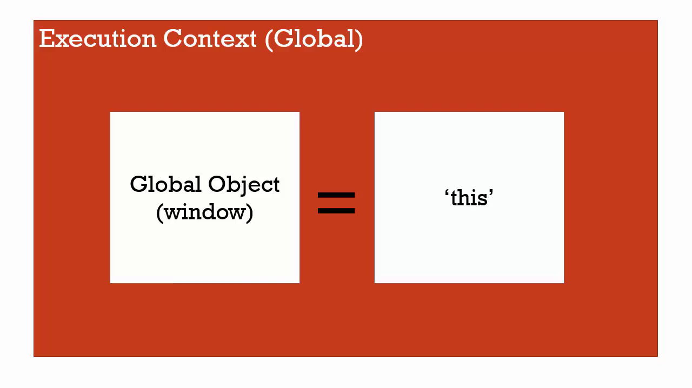
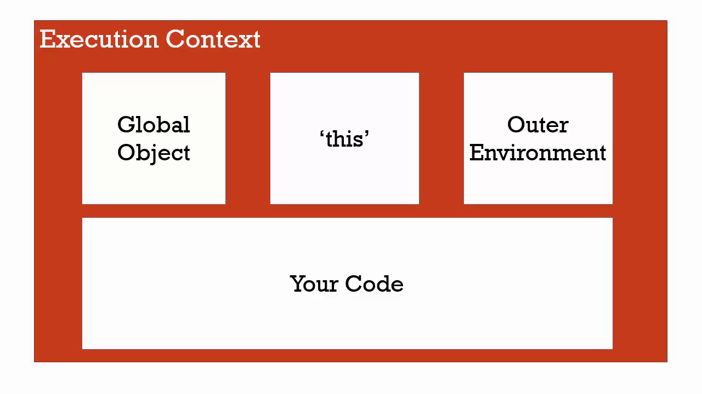
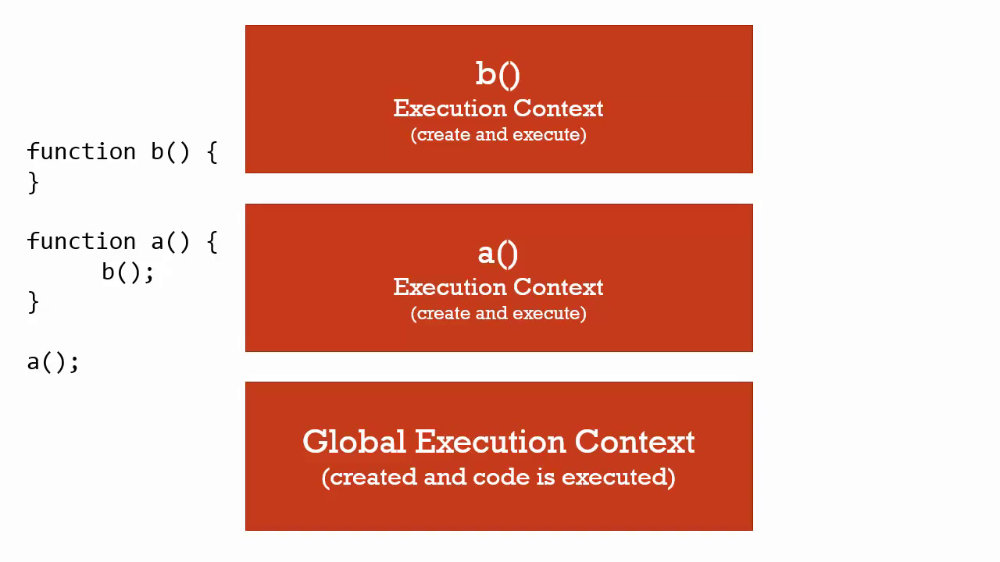
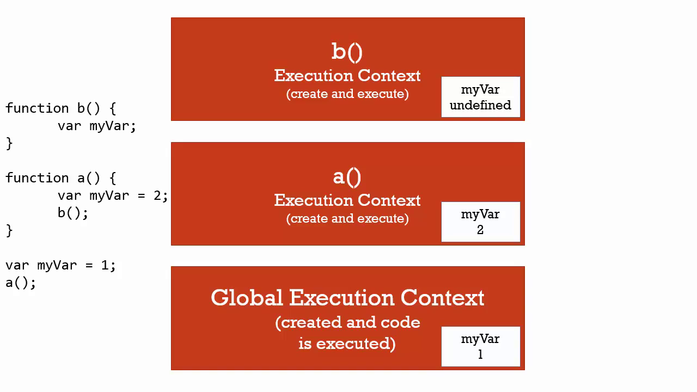
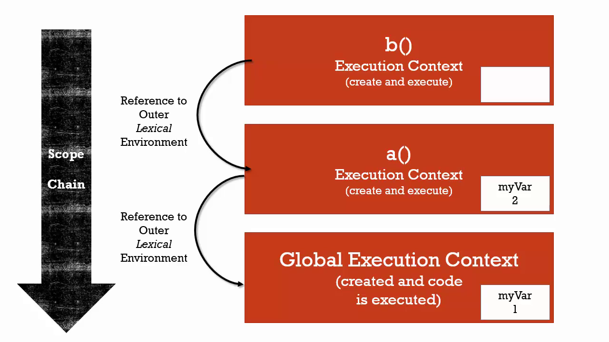
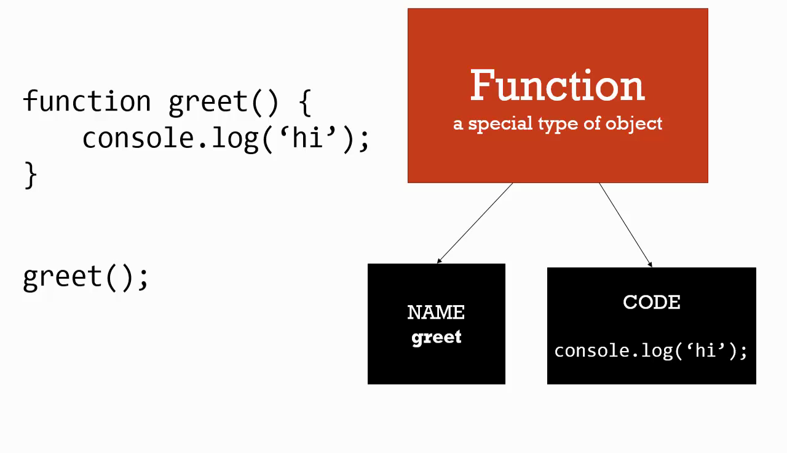
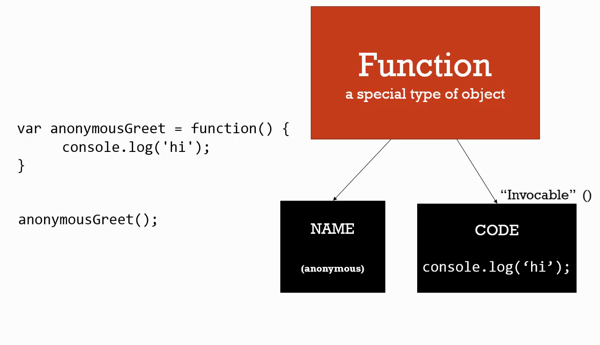
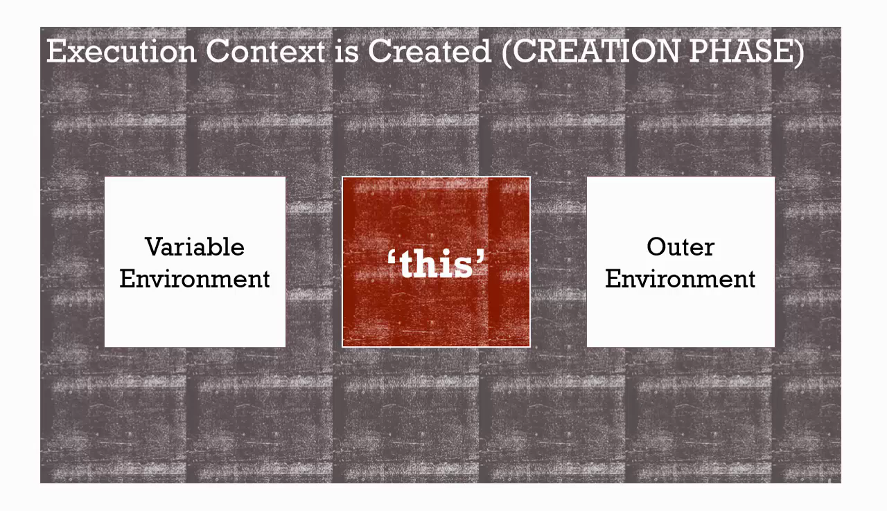
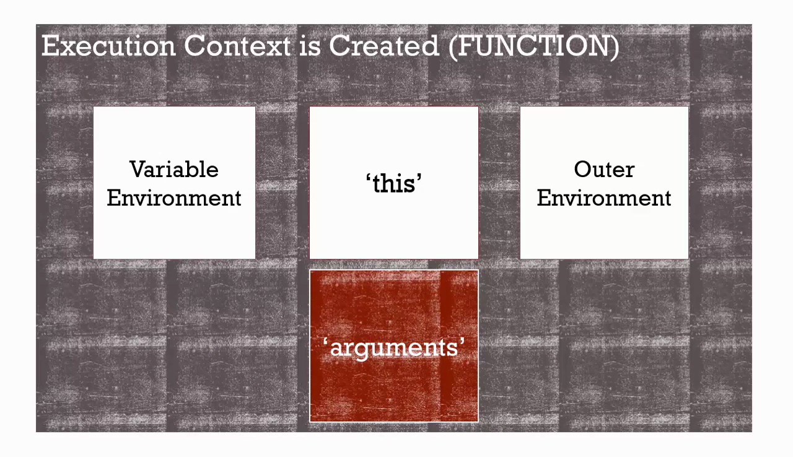
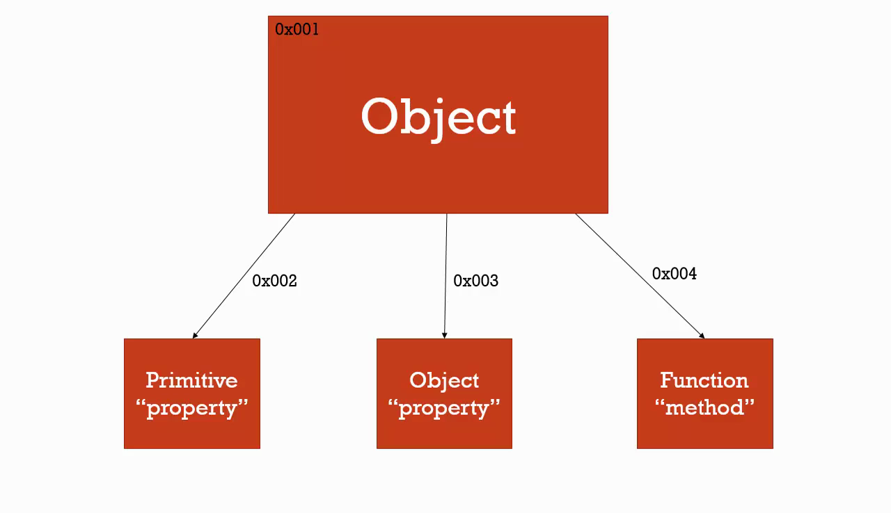

Javascript - Reintroduction for programmers
Table of Contents
- 1. Overview
- 2. Pre-coding Tips
- 3. Reserved Words
- 4. Syntax Basics
- 5. Types and Variables
- 6. Conditional Code
- 7. Loops
- 8. Operators
- 9. Arrays
- 10. Important concepts
- 10.1. Syntax Parser (SP)
- 10.2. Execution Context (EC)
- 10.3. Execution Stack (ES)
- 10.4. Lexical Environment
- 10.5. Name-Value Pair and Objects
- 10.6. Global Environment and The Global Object
- 10.7. Hoisting and creating execution context
- 10.8. Execution Stack, Function Invocation and Variable environment
- 11. Scope and the scope chain
- 12. Functions
- 13. Objects in depth
- 14. Closures
- 15. Testing Type
- 16. Prototype-based programming
- 17. EcmaScript 2015 (ES6) and beyond
- 17.1. Arrow functions
- 17.2. Function default parameter value
- 17.3. Destructuring objects and arrays
- 17.4. Array methods - map / filter / reduce
- 17.5. Spread operator “…”
- 17.6. Iterators + For..Of
- 17.7. Symbols
- 17.8. Subclassable Built-ins
- 17.9. Object property shorthand
- 17.10. Promises
- 17.11. Template literals
- 17.12. Tagged template literals
- 17.13. Imports / Exports
- 17.14. Classes in ES6
- 17.15.
Extendsandsuperkeywords - 17.16. Async Await
- 17.17. Generators
- 17.18. Static Methods
- 17.19. Binary and Octal Literals
1. Overview
JavaScript is a rich and expressive language in its own right. This section covers the basic concepts of JavaScript, as well as some frequent pitfalls for people who have not used JavaScript before. While it will be of particular value to people with no programming experience, even people who have used other programming languages may benefit from learning about some of the peculiarities of JavaScript.
JavaScript has nothing in common with Java. It is a completely different language with a similar naming. JavaScript has the language specification called ECMAScript.
If you’re interested in learning more about the JavaScript language in its older variants, the book JavaScript: The Good Parts by Douglas Crockford is highly recommended.
2. Pre-coding Tips
There are currently several main JavaScript/html rendering engines available. A regular web-site should look equally good in all of them.
2.1. Know your enemy: Browser types
- Firefox and other browsers based on it use an open-source rendering engine called Gecko. Firefox’s JavaScript engine is called SpiderMonkey.
- Safari and older version of Chromium based browsers (before v.28) used an open-source rendering engine called Webkit. They always used different JavaScript implementations. Safari uses it’s own closed-source JavaScript engine (called JavaScriptCore, Nitro or SquirrelFish).
- Chrome (after v.28) and other browsers based on the Chroimium project use the Blink rendering engine, a fork of WebKit. Chrome uses Google V8 JavaScript engine.
- Modern version of Opera use the Blink/V8 combination. Older versions of Opera (until v.12) used it’s closed source rendering engine called Presto and JavaScript engine Carakan.
- Internet Explorer uses the closed-source engine called Trident. The engine is old and terrifying in IE6, IE7, but upgraded in IE8 and upgraded to much better standards compliance in IE9 and later versions. Its JavaScript engine is called Chakra. IE is discontinued with Windows 10.
- Microsoft Edge is the novel browser from Microsoft that used the EdgeHTML rendering engine and updated versions of the Chakra JavaScript Engine. Since 2018 Microsoft changed the internals of Edge to Blink/V8 combination.
Sometimes, the cross-browser development becomes complicated, so browsers are graded according to the level of support in descending order.
- Latest Safari(WebKit)/Chrome(Blink) based browsers
- Supported ideally.
- Latest Firefox(Gecko) based browsers
- Next support target.
- Less recent non Webkit/Blink/Gecko based major browsers
- Supported well enough, but minor drawbacks in look and feel are possible.
- Old major browsers
- Only the core functionality of the site is supported.
- Very old. Text browsers.
- Not supported. If it works, it works. If it doesn’t, no one cares.
The grading above is an example from real life.
2.2. Choose the modern DOCTYPE
As you probably already know from HTML, there are two main rendering modes: Standards Mode (Strict Mode) and Quirks mode. Actually, there is a third mode called Almost Standards Mode, all of them described well in Wikipedia quirks mode page.
Browser chooses the mode according to DOCTYPE header of HTML.
For modern sites there is a good DOCTYPE:
<!DOCTYPE HTML>
This DOCTYPE make modern browsers render in Standards Mode and older ones in Almost Standards Mode (which is the maximum they can do).
Note, that the modern rendering mode is not just an HTML issue. There are JavaScript properties which also depend on the rendering mode, especially CSS-box and positioning-related.
Not using correct DOCTYPE will cost you time debugging. <!DOCTYPE HTML> is ok.
2.3. Resources
Main manual on the net about JavaScript - the documentation center of Mozilla Developer Network (MDN).
MDN is usually good for general and firefox-specific information.
2.4. Incompatibilities
There are many cross-browser incompatibilities in frontend-programming. When you come across them, http://www.quirksmode.org/ may be a help. It contains information about lots of incompatibilities. Also, there is a combo to search it. Try entering “quirksmode onkeypress” in google for instance.
2.5. The ECMAScript specification
The language specification (formal description of syntax, basic objects and algorithms) of JavaScript is called ECMAScript.
The language specification tells a lot about how it works, but it is an advanced source of information.
Today we live in a time of changes. The modern standard can be traced to ECMA-262 16th edition. The implementation of new EcmaScript features can be tracked on TC39 section of ecma international.
When you want to learn how the language works in-depth, there’s more perspective in reading new versions of ES, but remember that many features are not implemented yet. You can find a list of supported browsers/features for important JS versions at http://kangax.github.io/compat-table.
3. Reserved Words
JavaScript has a number of “reserved words”, or words that have special meaning in the language. You should avoid using these words in your code except when using them with their intended meaning.
abstract |
boolean |
break |
byte |
case |
catch |
char |
class |
const |
continue |
debugger |
default |
delete |
do |
double |
else |
enum |
export |
extends |
final |
finally |
float |
for |
function |
goto |
if |
implements |
import |
in |
instanceof |
int |
interface |
long |
native |
new |
package |
private |
protected |
public |
return |
short |
static |
super |
switch |
synchronized |
this |
throw |
throws |
transient |
try |
typeof |
var |
void |
volatile |
while |
with |
4. Syntax Basics
Understanding statements, variable naming, whitespace, and other basic JavaScript syntax.
4.1. A simple variable declaration
The oldest way to declare variable is by using var:
var foo = 'hello world'; // declare local/global variables foo = 200;
From ES6, the preferred way of declaring varables is using the const and let keywords.
In the spirit of ES standard evolution, correcting controversial language aspects are done in a backwards-comaptible way.
const creates a constant binding to a variable while let creates standard non-constant variable (similar to var). Both const and let are block-scoped, unlike var which is function-scoped.
const constant_variable = 100; constant_variable = 0; // Error, constant binding... let variable = 100; variable = 0; // perfectly legal
4.2. Comments
One-line comments start with two forward slash characters //.
The rest of the line is a comment. It may occupy a full line of its own or follow a statement.
Multiline comments start with a forward slash and an asterisk /* and end with an asterisk and a forward slash */.
4.3. Whitespace has no meaning outside of quotation marks
var foo = 'hello world';
4.4. Parentheses indicate precedence
2 * 3 + 5; // returns 11; multiplication happens first 2 * (3 + 5); // returns 16; addition happens first
4.5. Tabs enhance readability, but have no special meaning
var foo = function() { console.log('hello'); };
4.6. Semicolons
A semicolon may be omitted in most cases when a line break exists. This would also work:
alert('Hello') alert('World')
Here, JavaScript interprets the line break as an “implicit” semicolon. This is called an automatic semicolon insertion. In most cases, a newline implies a semicolon. But “in most cases” does not mean “always”!
4.7. Strict mode
For a long time, JavaScript evolved without compatibility issues. New features were added to the language while old functionality didn’t change. That had the benefit of never breaking existing code. But the downside was that any mistake or an imperfect decision made by JavaScript’s creators got stuck in the language forever.
This was the case until 2009 when ECMAScript 5 (ES5) appeared. It added new features to the language and modified some of the existing ones. To keep the old code working, most such modifications are off by default. You need to explicitly enable them with a special directive: "use strict".
The directive looks like a string: "use strict" or 'use strict'. When it is located at the top of a script, the whole script works the “modern” way.
"use strict"; // this code works the modern way ...
Quite soon we’re going to learn functions (a way to group commands), so let’s note in advance that "use strict" can be put at the beginning of a function. Doing that enables strict mode in that function only. But usually people use it for the whole script.
Modern JavaScript supports “classes” and “modules” – advanced language structures, that enable use strict automatically. So we don’t need to add the “use strict” directive, if we use them.
5. Types and Variables
JavaScript is dynamically typed language. This means that the language is responsible for figuring out the type of the variable, during the code execution.
There are 7 (seven) primitive types in JavaScript:
- undefined
- represents lack of existance. A good pattern is to never set a variable to undefined
- null
- also represents lack of existance.
- boolean
- true or false value. (Because JavaScript is case-sensitive, null is not the same as Null, NULL, or any other variant.)
- number
- - an integer or floating point number. There is no integer type. The consequences of the floating point aritmetics are applied here.
- string
- sequence of characters, specified in single(
') or double quotes(") and in backticks (`). - symbol (ES6+ only)
- an unique and immutable data type and may be used as an identifier for object properties
- BigInt
- an integer with arbitrary precision. For example:
9007199254740992n
Everythig that is not a primitive type is an object. There are built-in objects that are present with every javascript environment (like Math, Date, Number, RegEx, Array, etc). A comprehensive list is available on the MDN website.
Double and single quotes are “simple” quotes. There’s practically no difference between them in JavaScript.
Backticks are “extended functionality” quotes. They allow us to embed variables and expressions into a string by wrapping them in ${…}, for example:
let name = "John"; // embed a variable alert( `Hello, ${name}!` ); // Hello, John! // embed an expression alert( `the result is ${1 + 2}` ); // the result is 3
The expression inside ${…} is evaluated and the result becomes a part of the string. We can put anything in there: a variable like name or an arithmetical expression like 1 + 2 or something more complex.
6. Conditional Code
Sometimes you only want to run a block of code under certain conditions.
Flow control — via if and else blocks — lets you run code only
under certain conditions.
Flow control
var foo = true; var bar = false; if (bar) { // this code will never run console.log('hello!'); } if (bar) { // this code won't run } else { if (foo) { // this code will run } else { // this code would run if foo and bar were both false } }
6.1. Note
While curly braces aren’t strictly required around single-line if
statements, using them consistently, even when they aren’t strictly
required, makes for vastly more readable code.
Be mindful not to define functions with the same name multiple times
within separate if=/=else blocks, as doing so may not have the
expected result.
6.2. Truthy and falsey things
In order to use flow control successfully, it’s important to understand
which kinds of values are truthy and which kinds of values are
falsy. Sometimes, values that seem like they should evaluate one way
actually evaluate another.
Values that evaluate to true
'0'; 'any string'; []; // an empty array {}; // an empty object 1; // any non-zero number
Values that evaluate to false
0; ''; // an empty string NaN; // JavaScript's "not-a-number" variable null; undefined; // be careful -- undefined can be redefined!
6.3. Conditional Variable Assignment with The Ternary Operator
Sometimes you want to set a variable to a value depending on some
condition. You could use an if=/=else statement, but in many cases the
ternary operator is more convenient. [Definition: The ternary operator
tests a condition; if the condition is true, it returns a certain value,
otherwise it returns a different value.]
The ternary operator
// set foo to 1 if bar is true; // otherwise, set foo to 0 var foo = bar ? 1 : 0;
While the ternary operator can be used without assigning the return value to a variable, this is generally discouraged.
6.4. Switch Statements
Rather than using a series of if/else if/else blocks, sometimes it can be useful to use a switch statement instead. [Definition: Switch statements look at the value of a variable or expression, and run different blocks of code depending on the value.]
A switch statement
switch (foo) { case 'bar': alert('the value was bar -- yay!'); break; case 'baz': alert('boo baz :('); break; default: alert('everything else is just ok'); break; }
Switch statements have somewhat fallen out of favor in JavaScript, because often the same behavior can be accomplished by creating an object that has more potential for reuse, testing, etc. For example:
var stuffToDo = { 'bar' : function() { alert('the value was bar -- yay!'); }, 'baz' : function() { alert('boo baz :('); }, 'default' : function() { alert('everything else is just ok'); } }; if (stuffToDo[foo]) { stuffToDo[foo](); } else { stuffToDo['default'](); }
We’ll look at objects in greater depth later.
7. Loops
Loops let you run a block of code a certain number of times.
Loops
// logs 'try 0', 'try 1', ..., 'try 4' for (var i=0; i<5; i++) { console.log('try ' + i); }
Note that in loops even though we use the keyword var before the
variable name i, this does not “scope” the variable i to the loop
block. We’ll discuss scope in depth later in this chapter./
7.1. The for loop
A for loop is made up of four statements and has the following
structure:
for ([initialisation]; [conditional]; [iteration])
[loopBody]
The initialisation statement is executed only once, before the loop starts. It gives you an opportunity to prepare or declare any variables.
The conditional statement is executed before each iteration, and its return value decides whether or not the loop is to continue. If the conditional statement evaluates to a falsey value then the loop stops.
The iteration statement is executed at the end of each iteration and gives you an opportunity to change the state of important variables. Typically, this will involve incrementing or decrementing a counter and thus bringing the loop ever closer to its end.
The loopBody statement is what runs on every iteration. It can contain
anything you want. You’ll typically have multiple statements that need
to be executed and so will wrap them in a block ( {...}).
Here’s a typical for loop:
A typical for loop
for (var i = 0, limit = 100; i < limit; i++) { // This block will be executed 100 times console.log('Currently at ' + i); // Note: the last log will be "Currently at 99" }
7.2. The while loop
A while loop is similar to an if statement, except that its body
will keep executing until the condition evaluates to false.
while ([conditional]) [loopBody]
Here’s a typical while loop:
A typical while loop
var i = 0; while (i < 100) { // This block will be executed 100 times console.log('Currently at ' + i); i++; // increment i }
You’ll notice that we’re having to increment the counter within the loop’s body. It is possible to combine the conditional and incrementer, like so:
A while loop with a combined conditional and incrementer
var i = -1; while (++i < 100) { // This block will be executed 100 times console.log('Currently at ' + i); }
Notice that we’re starting at -1 and using the prefix incrementer
(++i).
7.3. The do-while loop
This is almost exactly the same as the while loop, except for the fact
that the loop’s body is executed at least once before the condition is
tested.
do [loopBody] while ([conditional])
Here’s a do-while loop:
A do-while loop
do { // Even though the condition evaluates to false // this loop's body will still execute once. alert('Hi there!'); } while (false);
These types of loops are quite rare since only few situations require a loop that blindly executes at least once. Regardless, it’s good to be aware of it.
7.4. Breaking and continuing
Usually, a loop’s termination will result from the conditional statement
not evaluating to true, but it is possible to stop a loop in its tracks
from within the loop’s body with the break statement.
Stopping a loop
for (var i = 0; i < 10; i++) { if (something) { break; } }
You may also want to continue the loop without executing more of the
loop’s body. This is done using the continue statement.
Skipping to the next iteration of a loop
for (var i = 0; i < 10; i++) { if (something) { continue; } // The following statement will only be executed // if the conditional 'something' has not been met console.log('I have been reached'); }
8. Operators
8.1. Basic Operators
Basic operators allow you to manipulate values.
Concatenation
var foo = 'hello'; var bar = 'world'; console.log(foo + ' ' + bar); // 'hello world'
Multiplication and division
2 * 3; 2 / 3;
Incrementing and decrementing
var i = 1; var j = ++i; // pre-increment: j equals 2; i equals 2 var k = i++; // post-increment: k equals 2; i equals 3
8.2. Operations on Numbers & Strings and type coercion
In JavaScript, numbers and strings will occasionally behave in ways you might not expect. This is because of coercion. Coercion is converting from one type to another. Because JavaScript is dynamically typed, this is often done silently.
Addition vs. concatenation
var foo = 1; var bar = '2'; console.log(foo + bar); // 12. uh oh, // coerced the 1 into '1' and do concatenation
Forcing a string to act as a number
var foo = 1; var bar = '2'; // coerce the string to a number console.log(foo + Number(bar));
The Number constructor, when called as a function (like above) will have the effect of casting its argument into a number. You could also use the unary plus operator, which does the same thing:
Forcing a string to act as a number (using the unary-plus operator)
console.log(foo + +bar);
If you do not want to use coercion, use the strict operators ( =, !== ).
It is recomended to use them always
8.3. Logical Operators
Logical operators allow you to evaluate a series of operands using AND and OR operations.
Logical AND and OR operators
var foo = 1; var bar = 0; var baz = 2; foo || bar; // returns 1, which is true bar || foo; // returns 1, which is true foo && bar; // returns 0, which is false foo && baz; // returns 2, which is true baz && foo; // returns 1, which is true
Though it may not be clear from the example, the || operator returns
the value of the first truthy operand, or, in cases where neither
operand is truthy, it’ll return the last of both operands.
This operator can be used for setting default values of undefined/null variables
The && operator returns the value of the first false operand, or the value of
the last operand if both operands are truthy. This is called the guard operator,
and can be used for checking if the variable is set to a value.
Be sure to consult the section called Truthy and falsey things for more details on which values evaluate to
true and which evaluate to false.
8.4. Note
You’ll sometimes see developers use these logical operators for flow
control instead of using if statements. For example:
// do something with foo if foo is truthy foo && doSomething(foo); // set bar to baz if baz is truthy; // otherwise, set it to the return // value of createBar() var bar = baz || createBar();
This style is quite elegant and pleasantly terse; that said, it can be really hard to read, especially for beginners. I bring it up here so you’ll recognize it in code you read, but I don’t recommend using it until you’re extremely comfortable with what it means and how you can expect it to behave.
8.5. Comparison Operators
Comparison operators allow you to test whether values are equivalent or whether values are identical.
Comparison operators
var foo = 1; var bar = 0; var baz = '1'; var bim = 2; foo == bar; // returns false foo != bar; // returns true foo == baz; // returns true; careful! foo === baz; // returns false foo !== baz; // returns true foo === parseInt(baz); // returns true foo > bim; // returns false bim > baz; // returns true foo <= baz; // returns true // Interesting pitfalls... 1 < 2 < 3 // returns true 3 < 2 < 1; // returns true, false coerces to 0 null < 1 // returns true, null coerces to 0 null == 0 // returns false ?? undefined > 1 // returns false undefined < 1 // returns false "" == 0 // true "" == false // true
For a better explination, see the following links:
8.6. Operator precedence and associativity:
The list of operator precedence and associativity is given on the following link: Operator Precedence and associativity
9. Arrays
Arrays are zero-indexed lists of values. They are a handy way to store a set of related items of the same type (such as strings), though in reality, an array can include multiple types of items, including other arrays.
Arrays in JavaScript are actually a special type of object. They work very much like regular objects (numerical properties can naturally be accessed only using [] syntax) but they have one magic property called ’length’. This is always one more than the highest index in the array.
A simple array
var myArray = [ 'hello', 'world' ];
Accessing array items by index
var myArray = [ 'hello', 'world', 'foo', 'bar' ]; console.log(myArray[3]); // logs 'bar'
Testing the size of an array
var myArray = [ 'hello', 'world' ]; console.log(myArray.length); // logs 2
Changing the value of an array item
var myArray = [ 'hello', 'world' ]; myArray[1] = 'changed';
While it’s possible to change the value of an array item as shown in “Changing the value of an array item”, it’s generally not advised.
Adding elements to an array
var myArray = [ 'hello', 'world' ]; myArray.push('new');
Working with arrays
var myArray = [ 'h', 'e', 'l', 'l', 'o' ]; var myString = myArray.join(''); // 'hello' var mySplit = myString.split(''); // [ 'h', 'e', 'l', 'l', 'o' ]
Note that array.length isn’t necessarily the number of items in the
array. Consider the following:
var a = ["dog", "cat", "hen"]; a[100] = "fox"; console.log(a.length) 101
If you query a non-existent array index, you get undefined:
> typeof a[90] undefined
If you take the above into account, you can iterate over an array using the following:
for (var i = 0; i < a.length; i++) { // Do something with a[i] }
This is slightly inefficient as you are looking up the length property once every loop. An improvement is this:
for (var i = 0, len = a.length; i < len; i++) { // Do something with a[i] }
An even nicer idiom is:
for (var i = 0, item; item = a[i++];) { // Do something with item }
Here we are setting up two variables. The assignment in the middle part
of the for loop is also tested for truthfulness - if it succeeds, the
loop continues. Since i is incremented each time, items from the array
will be assigned to item in sequential order. The loop stops when a
“falsy” item is found (such as undefined).
Note that this trick should only be used for arrays which you know do
not contain “falsy” values (arrays of objects
or DOM nodes for example).
If you are iterating over numeric data that might include a 0 or string
data that might include the empty string you should use the i, len idiom
instead.
Another way to iterate is to use the for…in loop. Note that if someone added new properties to Array.prototype, they will also be iterated over by this loop:
for (var i in a) { // Do something with a[i] }
If you want to append an item to an array simply do it like this:
a.push(item);
Arrays come with a number of methods:
| Method name | Description |
|---|---|
| a.toString() | Returns a string with the toString() of |
| each element separated by commas. | |
| a.toLocaleString() | Returns a string with the toLocaleString() |
| of each element separated by commas. | |
| a.concat(item[, itemN]) | Returns a new array with the items added on to it. |
| a.join(sep) | Converts the array to a string - values |
| delimited by the sep param | |
| a.pop() | Removes and returns the last item. |
| a.push(item[, itemN]) | Push adds one or more items to the end. |
| a.reverse() | Reverse the array. |
| a.shift() | Removes and returns the first item. |
| a.slice(start, end) | Returns a sub-array. |
| a.sort([cmpfn]) | Takes an optional comparison function. |
| a.splice(start, delcount[, itemN]) | Lets you modify an array by deleting a |
| section and replacing it with more items. | |
| a.unshift([item]) | Prepends items to the start of the array. |
More methods can be found here: https://developer.mozilla.org/en-US/docs/Web/JavaScript/Reference/Global_Objects/Array
10. Important concepts
JavaScript comes with its own advantages and caveats. To better understand the way JS works, some important concepts will be discussed!
10.1. Syntax Parser (SP)
The syntax parses is a program that reads your code and determines what it does and if its grammar (syntax) is valid. Usually is part of a compiler or interpreter. The compilers and interpreters are responsible for syntax parsing and translating the code into executable commands (computer instructions).
The compilers/interprets can add additional commands as process of optimizing the executable commands.

10.2. Execution Context (EC)
An execution context is an abstract concept of an environment where the Javascript code is evaluated and executed. Whenever any code is run in JavaScript, it’s run inside an execution context.
There are 3 types of Execution Contexts in JavaScript.
- Global Execution Context
- This is the default or base execution context. The code that is not inside any function is in the global execution context. It performs two things: it creates a global object which is a window object (in the case of browsers) and sets the value of this to equal to the global object. There can only be one global execution context in a program.
- Functional Execution Context
- Every time a function is invoked, a brand new execution context is created for that function. Each function has its own execution context, but it’s created when the function is invoked or called. There can be any number of function execution contexts. Whenever a new execution context is created, it goes through a series of steps in a defined order.
- Eval Function Execution Context
- Code executed inside an eval function also gets its own execution context, but as eval isn’t (and shouldn’t be) usually used by JavaScript developer except in special circumstances.
In short, EC is a wrapper that help manage the code that is running. The execution context is responsible for managing the code that is currently running. Execution context can have code that sits in the different lexical environments or other values.
Every script/code starts with an execution context called global execution context. And every time we call a function, a new execution context is created and is put on top of the execution stack. The same pattern follows when you call the nested function which calls another nested function:
10.3. Execution Stack (ES)
Execution stack, also known as “calling stack” in other programming languages, is a stack with a LIFO (Last in, First out) structure, which is used to store all the execution context created during the code execution.
When the JavaScript engine first encounters your script, it creates a global execution context and pushes it to the current execution stack. Whenever the engine finds a function invocation, it creates a new execution context for that function and pushes it to the top of the stack.
The engine executes the function whose execution context is at the top of the stack. When this function completes, its execution stack is popped off from the stack, and the control reaches to the context below it in the current stack.
let a = 'Hello World!'; function first() { console.log('Inside first function'); second(); console.log('Again inside first function'); } function second() { console.log('Inside second function'); } first(); console.log('Inside Global Execution Context');
Figure 1: Execution Stack of code segment
10.4. Lexical Environment
According to ECMAScript specification 262 (8.1):
A Lexical Environment is a specification type used to define the association of Identifiers to specific variables and functions based upon the lexical nesting structure of ECMAScript code
In JavaScript, lexical environment is a data structure that holds identifier-variable mapping. Where identifier refers to the name of variables/functions, and the variable is the reference to actual object [including function object or primitive value].
Lexical in general means in hierarchy or in a sequence. Whenever a new execution context (EC) is created a new lexical environment is created and it is referenced in local EC in memory space.
Lexical Environment: Local Memory + Lexical Environment of its Parent
Each Lexical Environment has three components:
- Environment Record
- Reference to the outer environment,
- This binding.
10.4.1. Environment Record
The environment record is the place where the variable and function declarations are stored inside the lexical environment.
There are also two types of environment record:
- Declarative environment record
- As its name suggests stores variable and function declarations. The lexical environment for function code contains a declarative environment record.
- Object environment record
- The lexical environment for global code contains a objective environment record. Apart from variable and function declarations, the object environment record also stores a global binding object (window object in browsers). So for each of binding object’s property (in case of browsers, it contains properties and methods provided by browser to the window object), a new entry is created in the record.
For the function code, the environment record also contains an arguments object that contains the mapping between indexes and arguments passed to the function and the length(number) of the arguments passed into the function. For example, an argument object for the below function looks like this:
function foo(a, b) { var c = a + b; } foo(2, 3); // argument object Arguments: {0: 2, 1: 3, length: 2},
10.4.2. Reference to the Outer Environment
The reference to the outer environment means it has access to its outer lexical environment. That means that the JavaScript engine can look for variables inside the outer environment if they are not found in the current lexical environment.
10.4.3. This Binding
In this component, the value of this is determined or set.
In the global execution context, the value of this refers to the global object. (in browsers, this refers to the Window Object).
In the function execution context, the value of this depends on how the function is called. If it is called by an object reference, then the value of this is set to that object, otherwise, the value of this is set to the global object or undefined (in strict mode). For example:
const person = { name: 'peter', birthYear: 1994, calcAge: function() { console.log(2018 - this.birthYear); } } person.calcAge(); // 'this' refers to 'person', because 'calcAge' was called with //'person' object reference const calculateAge = person.calcAge; calculateAge(); // 'this' refers to the global window object, because no object reference was given
Abstractly, the lexical environment looks like this in pseudocode:
GlobalExectionContext = {
LexicalEnvironment: {
EnvironmentRecord: {
Type: "Object",
// Identifier bindings go here
}
outer: <null>,
this: <global object>
}
}
FunctionExectionContext = {
LexicalEnvironment: {
EnvironmentRecord: {
Type: "Declarative",
// Identifier bindings go here
}
outer: <Global or outer function environment reference>,
this: <depends on how function is called>
}
}
Variable Environment: It’s also a Lexical Environment whose EnvironmentRecord holds bindings created by VariableStatements within this execution context.
As written above, the variable environment is also a lexical environment, So it has all the properties and components of a lexical environment as defined above.
In ES6, one difference between LexicalEnvironment component and the VariableEnvironment component is that the former is used to store function declaration and variable (let and const) bindings, while the latter is used to store the variable (var) bindings only.
So in short, a lexical environment is a place where variables and functions live or physically present during the program execution.
A lexical environment exists in programming languages in which where you write something is important.
Not all programming languages have correct lexical environment. The compiler/interpeter cares where you put your stuff.
10.5. Name-Value Pair and Objects
Name-Value pair represents a name that maps to a unique value. The name may be defined more than once, but it can only have one value in any given execution context. The value can be more name/value pairs.
address = '100th Main St.'; // foo - name, 'hello world' - its value
In JavaScript, an object is a collection of name-value pairs.
address: {
street: 'Main',
number: 100,
apartment: {
floor: 3,
number: 301
}
}
10.6. Global Environment and The Global Object
In JS, code is run inside an execution context. The base execution context is the global execution context. Global means that is accessible anywhere, everywhere!!! The global execution context implicitly creates the Global Object and a special variable this.
In browsers, the window object is the global object. If we are in the
global execution context, the this variable references the global object.

Figure 2: The Global Execution Context and Global Object
In short, everything that is not inside a function is part of the global object.
The execution context also contains a reference to the outer environment.
If no outer environment is present (a.k.a we are in the global execution
context, the value is null)
var a = 'Hello World!'; function b() { var c = "Hello Function"; } console.log(a); console.log(b); console.log(c);
OUTPUT:
Hello World
Hello Function
// Error: …

Figure 3: The execution context for the previous code
10.7. Hoisting and creating execution context
Consider the following example
b(); console.log(a); var a = 'Hello World!'; function b() { console.log('Called b!'); }
In other languages like C, We can presume that this code is invalid because
the function b is called before its declaration.
Also we can say that the variable a is accessed before it is declared,
thus creating an error.
Instead the output is:
Called b!
undefined
This is because of an procedure called hoisting. The hoisting is a direct cause of creating execution contexts.
When execution context is created, the JavaScript engine passes 2 phases.
10.7.1. Creation phase
The execution context is created during the creation phase. Following things happen during the creation phase:
- LexicalEnvironment component is created.
- VariableEnvironment component is created.
So the execution context can be conceptually represented as follows:
ExecutionContext = {
LexicalEnvironment = <ref. to LexicalEnvironment in memory>,
VariableEnvironment = <ref. to VariableEnvironment in memory>,
}
The global object is set up, this is also set up and the outer environment is also set.
The parser also goes trough the source code and setups memory space for variable and function.
This means that before the code is executed, the JS engine creates the functions and variables.
The variables in this phase are set to the undefined value, and the code of the functions is placed in memory.
10.7.2. Execution phase
the code is interpeted and the commands are executed, line by line.
This means that every javascript engine passes the code twice, once for the creation phase, the second time for the execution phase.
10.8. Execution Stack, Function Invocation and Variable environment
Every function invocation creates a new execution context. Each context is placed in the execution stack and processed accordingly. When finished, the execution context is popped off the execution stack.
For example, the following code creates the execution stack given in the picture.
function b(){ } function a(){ b(); } a();

Figure 4: The Execution Stack
Every execution context has its own variable environment (memory space).
Consider the following code:
function b() { var myVar; console.log(myVar); } function a() { var myVar = 2; console.log(myVar); b(); } var myVar = 1; console.log(myVar); a(); console.log(myVar);
The output is:
1 2 undefined 1

11. Scope and the scope chain
“Scope” refers to the variables that are available to a piece of code at a given time. A lack of understanding of scope can lead to frustrating debugging experiences.
When a variable is declared inside of a function using the var
keyword, it is only available to code inside of that function — code
outside of that function cannot access the variable. On the other hand,
functions defined inside that function will have access to to the
declared variable.
Furthermore, variables that are declared inside a function without the
var keyword are not local to the function — JavaScript will traverse
the scope chain all the way up to the window scope to find where the
variable was previously defined. If the variable wasn’t previously
defined, it will be defined in the global scope, which can have
extremely unexpected consequences.
Consider the folowing example:
function b() { console.log(myVar); } function a() { var myVar = 2; console.log(myVar); b(); } var myVar = 1; a();
The output is:
1
The output is 1 because the function b has the outer environment is set to the global environment.
This is because of the lexical environment.
The function determines its outer environment based on the lexical environment.
In our example functions a and b sits lexically in the global environment.

This means that the execution stack does not have to be the same as the scope chain!
If we change the previous example as following:
function a() { function b() { console.log(myVar); } var myVar = 2; console.log(myVar); b(); } var myVar = 1; a(); b();
The output is:
2
Here we change the lexical environment of function b, hence the scope chain has changed to the following.

Also note that the function b is not accessible in the global execution context, thus the last line b(); reports a Reference Error.
Think about what will happen if the line var myVar = 2 was removed from the function a.
11.1. Variable declaration: var, const, let
In JavaScript, there are three keywords available to declare a variable, and each has its differences. Those are var, let and const.
11.1.1. Short explanation
Variables declared with const keyword can’t be reassigned, while let and var can.
Always declare your variables with const by default, and with let if you need to mutate it or reassign it later.
| Scope | Reassignable | Mutable | Temporal Dead Zone | |
|---|---|---|---|---|
| const | block | No | Yes | Yes |
| let | block | Yes | Yes | Yes |
| var | function | Yes | Yes | No |
const person = "Nick"; person = "John" // Will raise an error, person can't be reassigned
let person = "Nick"; person = "John"; console.log(person) // "John", reassignment is allowed with let
Remember, the scope of a variable roughly means “where is this variable available in the code”.
function f() { { let x; { // okay, block scoped name const x = "sneaky"; // error, const x = "foo"; } // error, already declared in block let x = "inner"; } }
11.1.2. var keyword
var declared variables are function scoped, meaning that when a variable is created in a function, everything in that function can access that variable. Besides, a function scoped variable created in a function can’t be accessed outside this function.
function myFunction() { var myVar = "Nick"; console.log(myVar); // "Nick" - myVar is accessible inside the function } console.log(myVar); // Throws a ReferenceError, myVar is not accessible outside the function.
Still focusing on the variable scope, here is a more subtle example:
function myFunction() { var myVar = "Nick"; if (true) { var myVar = "John"; console.log(myVar); // "John" // actually, myVar being function scoped, we just erased the previous myVar value "Nick" for "John" } console.log(myVar); // "John" - see how the instructions in the if block affected this value } console.log(myVar); // Throws a ReferenceError, myVar is not accessible outside the function.
Besides, var declared variables are moved to the top of the scope at execution. This is what we called var hoisting.
This portion of code:
console.log(myVar) // undefined -- no error raised var myVar = 2;
is understood at execution like:
var myVar; console.log(myVar) // undefined -- no error raised myVar = 2;
11.1.3. let keyword
var and let are about the same, but let declared variables
- are block scoped
- are not accessible before they are assigned
- can’t be re-declared in the same scope
Let’s see the impact of block-scoping taking our previous example:
function myFunction() { let myVar = "Nick"; if (true) { let myVar = "John"; console.log(myVar); // "John" // actually, myVar being block scoped, we just created a new variable myVar. // this variable is not accessible outside this block and totally independent // from the first myVar created ! } console.log(myVar); // "Nick", see how the instructions in the if block DID NOT affect this value } console.log(myVar); // Throws a ReferenceError, myVar is not accessible outside the function.
Now, what it means for let (and const) variables for not being accessible before being assigned:
console.log(myVar) // raises a ReferenceError ! let myVar = 2;
By contrast with var variables, if you try to read or write on a let or const variable before they are assigned an error will be raised. This phenomenon is often called Temporal dead zone or TDZ.
Note: Technically, let and const variables declarations are being hoisted too, but not their assignation. Since they’re made so that they can’t be used before assignation, it intuitively feels like there is no hoisting, but there is. Find out more on this very detailed explanation here if you want to know more.
In addition, you can’t re-declare a let variable:
let myVar = 2; let myVar = 3; // Raises a SyntaxError
11.1.4. const keyword
const declared variables behave like let variables, but also they can’t be reassigned.
To sum it up, const variables:
- are block scoped
- are not accessible before being assigned
- can’t be re-declared in the same scope
- can’t be reassigned
const myVar = "Nick"; myVar = "John" // raises an error, reassignment is not allowed
const myVar = "Nick"; const myVar = "John" // raises an error, re-declaration is not allowed
But there is a subtlety : const variables are not immutable ! Concretely, it means that object and array const declared variables can be mutated.
For objects:
const person = { name: 'Nick' }; person.name = 'John' // this will work ! person variable is not completely reassigned, but mutated console.log(person.name) // "John" person = "Sandra" // raises an error, because reassignment is not allowed with const declared variables
For arrays:
const person = []; person.push('John'); // this will work ! person variable is not completely reassigned, but mutated console.log(person[0]) // "John" person = ["Nick"] // raises an error, because reassignment is not allowed with const declared variables
12. Functions
Functions contain blocks of code that need to be executed repeatedly. Functions can take zero or more arguments, and can optionally return a value.
Functions are First class citizens of the languages.
This means that you can use them as any other type.
It is a special type of object, but it is an object!
You can assign custom properties of the functions.
The function object has special properties:
- name
- can be undefined
- code
- the code of the function. This property is
invocable
./img/function-object.png]]
Take the following example:
function greet() { console.log('hi'); } greet.language = 'english'; console.log(greet);
./img/function-object-example.png]]
12.1. Function Statements vs function expressions
Functions can be created in a variety of ways:
Function Statement
function greet() { console.log('hi'); }
Function statement does not evaluate to a value.

Named Function Expression
var greet = function greeting() { console.log('hi'); }
When using named functions, we create a variable that references to the function in memory.
We can simplify the named function example using the following code:
var greet = function () { console.log('hi'); }
Because we reference the function using the greet variable, we can omit the name of the function. The functions that don’t have a name are called anonymous functions!

greet(); // Will execute the function // Function Statement function greet() { console.log('hi'); } anonymousGreet(); // Uncaught TypeError var anonymousGreet = function() { console.log('hi'); } anonymousGreet(); // Will execute // Executing function passed as parameter (callback) function log(a) { a(); } // create a function on the fly log(function() { console.log('hi'); });
12.2. References and values
In JavaScript, every primitive type is passed by value (copied). Every non-primitive type is passed by referece.
// by value (primitives) var a = 3; var b; b = a; a = 2; console.log(a); console.log(b); // by reference (all objects (including functions)) var c = { greeting: 'hi' }; var d; d = c; c.greeting = 'hello'; // mutate console.log(c); console.log(d); // by reference (even as parameters) function changeGreeting(obj) { obj.greeting = 'Hola'; // mutate } changeGreeting(d); console.log(c); console.log(d); // equals operator sets up new memory space (new address) c = { greeting: 'howdy' }; console.log(c); console.log(d);
The output is:
2 3 Object { greeting: "hello" } Object { greeting: "hello" } Object { greeting: "Hola" } Object { greeting: "Hola" } Object { greeting: "howdy" } Object { greeting: "Hola" }
12.3. The this keyword, objects and functions
When an execution context for a function is created, during the creation phase, the variable environment, the outer environment and the this keyword are set.

The setting of the this keyword can be different for different situations.
For example:
function a() { console.log(this); // Global Object this.newvariable = 'hello'; // Add to the global object } var b = function() { console.log(this); // Global Object } a(); console.log(newvariable); // not good! b(); // Using object literal var c = { name: 'The c object', // object property log1: function() { console.log(this); }, update: function() { this.name = "Updated object"; }, log2: function() { // This will not behave correctly this.name = 'Updated in log2'; console.log(this); var setname = function(newname) { this.name = newname; } setname("Updated in setname"); console.log(this); }, log: function() { // Handling the log2 problem var self = this; self.name = 'Updated c object'; console.log(self); var setname = function(newname) { self.name = newname; } setname('Updated again! The c object'); console.log(self); } } c.log1(); c.log2(); c.log();
The value of this inside the log2 function is not behaving correctly.
Functions that are defined inside methods of an object do not set the this variable to the object.
To avoid that, we can use an additional variable (usually called self or that).
The value of this is determined using a simple series of steps:
- If the function is invoked using Function.call or Function.apply,
thiswill be set to the first argument passed to call/apply. If the first argument passed to call/apply isnullorundefined,thiswill refer to the global object (which is thewindowobject in Web browsers). - If the function being invoked was created using Function.bind,
thiswill be the first argument that was passed to bind at the time the function was created. - If the function is being invoked as a method of an object,
thiswill refer to that object. - Otherwise, the function is being invoked as a standalone function not attached to any object, and
thiswill refer to the global object.
A function invoked using Function.call
var myObject = { sayHello : function() { console.log('Hi! My name is ' + this.myName); }, myName : 'Rebecca' }; var secondObject = { myName : 'Colin' }; myObject.sayHello(); // logs 'Hi! My name is Rebecca' myObject.sayHello.call(secondObject); // logs 'Hi! My name is Colin'
A function created using Function.bind
var myName = 'the global object', sayHello = function () { console.log('Hi! My name is ' + this.myName); }, myObject = { myName : 'Rebecca' }; var myObjectHello = sayHello.bind(myObject); sayHello(); // logs 'Hi! My name is the global object' myObjectHello(); // logs 'Hi! My name is Rebecca'
A function being attached to an object at runtime
var myName = 'the global object', sayHello = function() { console.log('Hi! My name is ' + this.myName); }, myObject = { myName : 'Rebecca' }, secondObject = { myName : 'Colin' }; myObject.sayHello = sayHello; secondObject.sayHello = sayHello; sayHello(); // logs 'Hi! My name is the global object' myObject.sayHello(); // logs 'Hi! My name is Rebecca' secondObject.sayHello(); // logs 'Hi! My name is Colin'
12.4. Arguments and spread
An additional variable that is set for an execution context is the arguments keyword.
It contains all the parameters that are passed to the function.

Consider the following example
function greet(firstname, lastname, language) { language = language || 'en'; // setting up default parameters // Arguments is an array like object if (arguments.length === 0) { console.log('Missing parameters!'); console.log('-------------'); return; } console.log(firstname); console.log(lastname); console.log(language); console.log(arguments); console.log('arg 0: ' + arguments[0]); console.log('-------------'); } greet(); greet('John'); greet('John', 'Doe'); greet('John', 'Doe', 'es'); // in ES6 I can do: function greet(firstname, ...other) // and 'other' will be an array that contains the rest of the arguments
12.5. Immediately invoked function expression and Self-Executing Anonymous Functions
A common pattern in JavaScript is the self-executing anonymous function. This pattern creates a function expression and then immediately executes the function. This pattern is extremely useful for cases where you want to avoid polluting the global namespace with your code — no variables declared inside of the function are visible outside of it.
A self-executing anonymous function
(function(){ var foo = 'Hello world'; })(); console.log(foo); // undefined!
If we expand this to function expressions we get
// function statement function greet(name) { console.log('Hello ' + name); } greet('John'); // using a function expression var greetFunc = function(name) { console.log('Hello ' + name); }; greetFunc('John'); // using an Immediately Invoked Function Expression (IIFE) var greeting = function(name) { return 'Hello ' + name; }('John'); console.log(greeting); // IIFE var firstname = 'John'; (function(name) { var greeting = 'Inside IIFE: Hello'; console.log(greeting + ' ' + name); }(firstname)); // IIFE
12.6. Functions as Arguments
In JavaScript, functions are “first-class citizens” — they can be assigned to variables or passed to other functions as arguments. Passing functions as arguments is an extremely common idiom in jQuery.
Passing an anonymous function as an argument
var myFn = function(fn) { var result = fn(); console.log(result); }; myFn(function() { return 'hello world'; }); // logs 'hello world'
Passing a named function as an argument
var myFn = function(fn) { var result = fn(); console.log(result); }; var myOtherFn = function() { return 'hello world'; }; myFn(myOtherFn); // logs 'hello world'
13. Objects in depth
Objects contain one or more key-value pairs. The key portion can be any string. The value portion can be any type of value: a number, a string, an array, a function, or even another object.
As you know objects are collections of name-value pairs. An object can have te following values for its names:
- primitive property
- object property
- function method
The values do not live inside the object, but the object keeps references to them.

13.1. The Comupted Member Access Operator
When accessing the properties of an object using square brackets,
it is using the computed member access operator - [].
If you are not using the CAM module, the member access operator - . can be used.
The member access operator can be used interchangeably with the computed member access operator.
var person = new Object(); person["firstname"] = "Jon"; person["lastname"] = "Doe"; var firstNameProperty = "firstname"; console.log(person); console.log(person[firstNameProperty]); console.log(person.firstname); console.log(person.lastname); person.address = new Object(); person.address.street = "111 Main St."; person.address.city = "New York"; person.address.state = "NY"; console.log(person.address.street); console.log(person.address.city); console.log(person["address"]["state"]);
[Definition: When one of these values is a function, it’s called a
method of the object.] Otherwise, they are called properties.
As it turns out, nearly everything in JavaScript is an object — arrays, functions, numbers, even strings — and they all have properties and methods.
Creating an “object literal”
Creating object using an object literal is the preferred way of creating objects.
var Tony = { firstname: 'Tony', lastname: 'Parker', address: { street: '111 Main St.', city: 'New York', state: 'NY' } }; function greet(person) { console.log('Hi ' + person.firstname); } greet(Tony); // Creating the object in the function call... greet({ firstname: 'Mary', lastname: 'Doe' }); Tony.address2 = { street: '333 Second St.' }
13.2. Faking namespaces in JavaScript
Namespaces are containers for functions and variables. In JavaScript, the collision is avoided using objects. This is a functionality that is commonly used in modern JavaScript.
var greet = 'Hello!'; var greet = 'Hola!'; console.log(greet); var english = { greetings: { basic: 'Hello!' } }; var spanish = {}; spanish.greet = 'Hola!'; console.log(english);
13.3. Note
When creating object literals, you should note that the key portion of each key-value pair can be written as any valid JavaScript identifier, a string (wrapped in quotes) or a number:
var myObject = { validIdentifier: 123, 'some string': 456, 99999: 789 };
14. Closures
Definition:
Closures are an extension of the concept of scope — functions have access to variables that were available in the scope where the function was created.
Another definition of closures can be summarized as:
Closure is when a function “remembers” its lexical scope even when the function is executed outside that lexical scope.
By these definitions, all functions are closures in JavaScript.
The same sort of behavior exists with functions defined within loops — the function “sees” the change in the variable’s value even after the function is defined, resulting in all clicks alerting 5.
Consider the following example:
function makeAdder(a) { return function(b) { return a + b; }; } x = makeAdder(5); y = makeAdder(20); console.log(x(6)); console.log(y(7))
What’s happening here is pretty much the same as was happening with the
inner functions earlier on: a function defined inside another function
has access to the outer function’s variables. The only difference here
is that the outer function has returned, and hence common sense would
seem to dictate that its local variables no longer exist. But
they do still exist — otherwise the adder functions would be unable
to work. What’s more, there are two different “copies” of makeAdder's
local variables — one in which a is 5 and one in which a is 20. So the
result of those function calls is as follows:
x(6) // returns 11 y(7) // returns 27
Here’s what’s actually happening. Whenever JavaScript executes a function, a ’scope’ object is created to hold the local variables created within that function. It is initialized with any variables passed in as function parameters. This is similar to the global object that all global variables and functions live in, but with a couple of important differences: firstly, a brand new scope object is created every time a function starts executing, and secondly, unlike the global object (which is accessible as this and in browsers is accessible as window) these scope objects cannot be directly accessed from your JavaScript code. There is no mechanism for iterating over the properties of the current scope object, for example.
So when makeAdder is called, a scope object is created with one
property: a, which is the argument passed to
the makeAdder function. makeAdder then returns a newly created function.
Normally JavaScript’s garbage collector would clean up the scope object
created for makeAdder at this point, but the returned function maintains
a reference back to that scope object. As a result, the scope object
will not be garbage collected until there are no more references to the
function object that makeAdder returned.
Scope objects form a chain called the scope chain, similar to the prototype chain used by JavaScript’s object system.
A closure is the combination of a function and the scope object in which it was created.
Closures let you save state — as such, they can often be used in place of objects. Several excellent introductions to closures can be found here.
Let’s analyse the following example and try to guess what it will print:
function buildFunctions() { var arr = []; for (var i = 0; i < 3; i++) { arr.push( function() { console.log(i); } ) } return arr; } var fs = buildFunctions(); fs[0](); fs[1](); fs[2]();
What about the following example?
function buildFunctions() { var arr = []; for (var i = 0; i < 3; i++) { arr.push( (function(j) { return function() { console.log(j); } }(i)) ) } return arr; } var fs2 = buildFunctions2(); fs2[0](); fs2[1](); fs2[2]();
An unfortunate side effect of closures is that they make it trivially easy to leak memory in Internet Explorer. JavaScript is a garbage collected language — objects are allocated memory upon their creation and that memory is reclaimed by the browser when no references to an object remain. Objects provided by the host environment are handled by that environment.
Browser hosts need to manage a large number of objects representing the HTML page being presented — the objects of the DOM. It is up to the browser to manage the allocation and recovery of these.
Internet Explorer uses its own garbage collection scheme for this, separate from the mechanism used for JavaScript. It is the interaction between the two that can cause memory leaks.
A memory leak in IE occurs any time a circular reference is formed between a JavaScript object and a native object. Consider the following:
function leakMemory() { var el = document.getElementById('el'); var o = { 'el': el }; el.o = o; }
The circular reference formed above creates a memory leak; IE will not
free the memory used by el and o until the browser is completely
restarted.
The above case is likely to go unnoticed; memory leaks only become a real concern in long running applications or applications that leak large amounts of memory due to large data structures or leak patterns within loops.
Leaks are rarely this obvious — often the leaked data structure can have many layers of references, obscuring the circular reference.
Closures make it easy to create a memory leak without meaning to. Consider this:
function addHandler() { var el = document.getElementById('el'); el.onclick = function() { el.style.backgroundColor = 'red'; }; }
The above code sets up the element to turn red when it is clicked. It also creates a memory leak. Why? Because the reference to el is inadvertently caught in the closure created for the anonymous inner function. This creates a circular reference between a JavaScript object (the function) and a native object (el).
There are a number of workarounds for this problem. The simplest is not to use the el variable:
function addHandler(){ document.getElementById('el').onclick = function(){ this.style.backgroundColor = 'red'; }; }
Surprisingly, one trick for breaking circular references introduced by a closure is to add another closure:
function addHandler() { var clickHandler = function() { this.style.backgroundColor = 'red'; }; (function() { var el = document.getElementById('el'); el.onclick = clickHandler; })(); }
The inner function is executed straight away, and hides its contents
from the closure created with clickHandler.
14.1. Closure Examples
How to lock in the value of i?
/* this won't behave as we want it to; */ /* every click will alert 5 */ for (var i=0; i<5; i++) { $('<p>click me</p>').appendTo('body').click(function() { alert(i); }); }
Locking in the value of i with a closure
/* fix: 'close' the value of i inside createFunction, so it won't change */ var createFunction = function(i) { return function() { alert(i); }; }; for (var i=0; i<5; i++) { $('<p>click me</p>').appendTo('body').click(createFunction(i)); }
Closures can also be used to resolve issues with the this keyword,
which is unique to each scope:
Using a closure to access inner and outer object instances simultaneously
var outerObj = { myName : 'outer', outerFunction : function () { // provide a reference to outerObj // through innerFunction's closure var self = this; var innerObj = { myName : 'inner', innerFunction : function () { // logs 'outer inner' console.log(self.myName, this.myName); } }; innerObj.innerFunction(); console.log(this.myName); // logs 'outer' } }; outerObj.outerFunction();
This mechanism can be particularly useful when dealing with callbacks, though in those cases, it is often better to use Function.bind, which will avoid any overhead associated with scope traversal.
15. Testing Type
JavaScript offers a way to test the “type” of a variable. However, the result can be confusing — for example, the type of an Array is “object”.
It’s common practice to use the typeof operator when trying to
determining the type of a specific value.
Testing the type of various variables
var myFunction = function() { console.log('hello'); }; var myObject = { foo : 'bar' }; var myArray = [ 'a', 'b', 'c' ]; var myString = 'hello'; var myNumber = 3; typeof myFunction; // returns 'function' typeof myObject; // returns 'object' typeof myArray; // returns 'object' -- careful! typeof myString; // returns 'string'; typeof myNumber; // returns 'number' typeof null; // returns 'object' -- careful! if (myArray.push && myArray.slice && myArray.join) { // probably an array // (this is called "duck typing") } if (Object.prototype.toString.call(myArray) === '[object Array]') { // Definitely an array! // This is widely considered as the most robust way // to determine if a specific value is an Array. }
jQuery offers utility methods to help you determine the type of an arbitrary value.
16. Prototype-based programming
Prototype-based programming is an OOP model that doesn’t use classes, but rather it first accomplishes the behavior of any class and then reuses it (equivalent to inheritance in class-based languages) by decorating (or expanding upon) existing prototype objects. (Also called classless, prototype-oriented, or instance-based programming.)
The original (and most canonical) example of a prototype-based language is Self developed by David Ungar and Randall Smith. However, the class-less programming style grows increasingly popular lately, and has been adopted for programming languages such as JavaScript, Lua and several others.
16.1. Standard built-in objects
JavaScript has several objects included in its core, for example, there are objects like Math, Object, Array, and String. The example below shows how to use the Math object to get a random number by using its random() method.
console.log(Math.random());
See JavaScript Reference: Standard built-in objects for a list of the core objects in JavaScript.
Every object in JavaScript is an instance of the object Object and therefore inherits all its properties and methods.
16.2. Custom objects
JavaScript is a prototype-based language and (until ES6) does not contain a class statement, such as is found in C++ or Java. This is sometimes confusing for programmers accustomed to languages with a class statement. Instead, JavaScript uses functions as classes. Defining a class is as easy as defining a function. In the example below we define a new class called Person.
var Person = function () {};
16.3. The object (class instance)
To create a new instance of an object obj we use the statement new obj,
assigning the result (which is of type obj) to a variable to access it later.
In the example above we define a class named Person. In the example below we create two instances (person1 and person2).
var person1 = new Person(); var person2 = new Person();
Note: Please see Object.create() for a new, additional, instantiation method that creates an uninitialized instance.
16.4. The constructor
The constructor is called at the moment of instantiation (the moment when the object instance is created). The constructor is a method of the class. In JavaScript the function serves as the constructor of the object, therefore there is no need to explicitly define a constructor method. Every action declared in the class gets executed at the time of instantiation.
The constructor is used to set the object’s properties or to call methods to prepare the object for use. Adding class methods and their definitions occurs using a different syntax described later in this article.
In the example below, the constructor of the class Person logs a message when a Person is instantiated.
var Person = function () { console.log('instance created'); }; var person1 = new Person(); var person2 = new Person();
The property (object attribute)
Properties are variables contained in the class; every instance of the object has those properties. Properties are set in the constructor (function) of the class so that they are created on each instance.
The keyword this, which refers to the current object,
lets you work with properties from within the class.
Accessing (reading or writing) a property outside of the class is done with the syntax:
InstanceName.Property, just like in C++, Java, and several other languages.
(Inside the class the syntax this.Property is used to get or set the property’s value.)
In the example below, we define the firstName property for the Person class at instantiation:
var Person = function (firstName) { this.firstName = firstName; console.log('Person instantiated'); }; var person1 = new Person('Alice'); var person2 = new Person('Bob'); // Show the firstName properties of the objects console.log('person1 is ' + person1.firstName); // logs "person1 is Alice" console.log('person2 is ' + person2.firstName); // logs "person2 is Bob"
16.5. The methods
Methods are functions (and defined like functions), but otherwise follow the same logic as properties. Calling a method is similar to accessing a property, but you add () at the end of the method name, possibly with arguments. To define a method, assign a function to a named property of the class’s prototype property. Later, you can call the method on the object by the same name as you assigned the function to.
In the example below, we define and use the method sayHello() for the Person class.
var Person = function (firstName) { this.firstName = firstName; }; Person.prototype.sayHello = function() { console.log("Hello, I'm " + this.firstName); }; var person1 = new Person("Alice"); var person2 = new Person("Bob"); // call the Person sayHello method. person1.sayHello(); // logs "Hello, I'm Alice" person2.sayHello(); // logs "Hello, I'm Bob"
In JavaScript methods are regular function objects bound to an object as a property, which means you can invoke methods “out of the context”. Consider the following example code:
var Person = function (firstName) { this.firstName = firstName; }; Person.prototype.sayHello = function() { console.log("Hello, I'm " + this.firstName); }; var person1 = new Person("Alice"); var person2 = new Person("Bob"); var helloFunction = person1.sayHello; // logs "Hello, I'm Alice" person1.sayHello(); // logs "Hello, I'm Bob" person2.sayHello(); // logs "Hello, I'm undefined" (or fails // with a TypeError in strict mode) helloFunction(); // logs true console.log(helloFunction === person1.sayHello); // logs true console.log(helloFunction === Person.prototype.sayHello); // logs "Hello, I'm Alice" helloFunction.call(person1);
As that example shows, all of the references we have to the sayHello function
— the one on person1, on Person.prototype, in the helloFunction variable, etc.
— refer to the same function. The value of this during a call to the function
depends on how we call it. Most commonly, when we call this in an expression
where we got the function from an object property — person1.sayHello()
— this is set to the object we got the function from (person1),
which is why person1.sayHello() uses the name “Alice” and person2.sayHello()
uses the name “Bob”. But if we call it other ways, this is set differently:
calling this from a variable helloFunction() sets this to the global object
(window, on browsers). Since that object (probably) doesn’t have a firstName
property, we end up with “Hello, I’m undefined”.
(That’s in loose mode code; it would be different [an error] in strict mode,
but to avoid confusion we won’t go into detail here.)
Or we can set this explicitly using Function.call (or Function.apply),
as shown at the end of the example.
16.6. Inheritance
Inheritance is a way to create a class as a specialized version of one or more
classes (JavaScript only supports single inheritance).
The specialized class is commonly called the child, and the other class is
commonly called the parent.
In JavaScript you do this by assigning an instance of the parent class to the
child class, and then specializing it.
In modern browsers you can also use Object.create to implement inheritance.
Note: JavaScript does not detect the child class prototype.constructor
(see Object.prototype), so we must state that manually. See the question
Why is it necessary to set the prototype constructor? on Stackoverflow.
In the example below, we define the class Student as a child class of Person. Then we redefine the sayHello() method and add the sayGoodBye() method.
// Define the Person constructor var Person = function(firstName) { this.firstName = firstName; }; // Add a couple of methods to Person.prototype Person.prototype.walk = function(){ console.log("I am walking!"); }; Person.prototype.sayHello = function(){ console.log("Hello, I'm " + this.firstName); }; // Define the Student constructor function Student(firstName, subject) { // Call the parent constructor, making sure (using Function#call) // that "this" is set correctly during the call Person.call(this, firstName); // Initialize our Student-specific properties this.subject = subject; }; // Create a Student.prototype object that inherits from Person.prototype. // Note: A common error here is to use "new Person()" to create the // Student.prototype. That's incorrect for several reasons, not least // that we don't have anything to give Person for the "firstName" // argument. The correct place to call Person is above, where we call // it from Student. Student.prototype = Object.create(Person.prototype); // See note below // Set the "constructor" property to refer to Student Student.prototype.constructor = Student; // Replace the "sayHello" method Student.prototype.sayHello = function(){ console.log("Hello, I'm " + this.firstName + ". I'm studying " + this.subject + "."); }; // Add a "sayGoodBye" method Student.prototype.sayGoodBye = function(){ console.log("Goodbye!"); }; // Example usage: var student1 = new Student("Janet", "Applied Physics"); student1.sayHello(); // "Hello, I'm Janet. I'm studying Applied Physics." student1.walk(); // "I am walking!" student1.sayGoodBye(); // "Goodbye!" // Check that instanceof works correctly console.log(student1 instanceof Person); // true console.log(student1 instanceof Student); // true
Regarding the Student.prototype = Object.create(Person.prototype); line: On older JavaScript engines without Object.create, one can either use a “polyfill” (aka “shim”, see the linked article), or one can use a function that achieves the same result, such as:
function createObject(proto) { function ctor() { } ctor.prototype = proto; return new ctor(); } // Usage: Student.prototype = createObject(Person.prototype);
Note: See Object.create for more on what it does, and a shim for older engines.
Making sure that this points to the right thing regardless of how the object is instantiated can be difficult. However, there is a simple idiom to make this easier.
var Person = function(firstName) { if (this instanceof Person) { this.firstName = firstName; } else { return new Person(firstName); } }
16.7. Encapsulation
In the previous example, Student does not need to know how the Person
class’s walk() method is implemented, but still can use that method; the Student
class doesn’t need to explicitly define that method unless we want to change it.
This is called encapsulation, by which every class packages data and methods into a single unit.
Information hiding is a common feature in other languages often as private and protected methods/properties. Even though you could simulate something like this on JavaScript, this is not a requirement to do Object Oriented programming.2
16.8. Abstraction
Abstraction is a mechanism that allows you to model the current part of the working problem, either by inheritance (specialization) or composition. JavaScript achieves specialization by inheritance, and composition by letting class instances be the values of other objects’ attributes.
The JavaScript Function class inherits from the Object class
(this demonstrates specialization of the model) and the Function.prototype
property is an instance of Object (this demonstrates composition).
var foo = function () {}; // logs "foo is a Function: true" console.log('foo is a Function: ' + (foo instanceof Function)); // logs "foo.prototype is an Object: true" console.log('foo.prototype is an Object: ' + (foo.prototype instanceof Object));
16.9. Polymorphism
Just as all methods and properties are defined inside the prototype property, different classes can define methods with the same name; methods are scoped to the class in which they’re defined, unless the two classes hold a parent-child relation1qqq (i.e. one inherits from the other in a chain of inheritance).
16.10. Real World Examples
Please check the lib/lodash.js and lib/jquery.js and review the libraries for objects, module pattern, function patterns etc.
17. EcmaScript 2015 (ES6) and beyond
ECMAScript 6, also known as ECMAScript 2015, is the latest version of the ECMAScript standard. ES6 is a significant update to the language, and the first update to the language since ES5 was standardized in 2009. Implementation of these features in major JavaScript engines is underway now. For reference if some of the features is supported, refer to https://kangax.github.io/compat-table/es6/.
See the ES6 standard for full specification of the ECMAScript 6 language.
The most notable ES6 features include:
17.1. Arrow functions
Arrows are a function shorthand using the => syntax. They are syntactically similar to the related feature in C#, Java 8 and CoffeeScript. They support both statement block bodies as well as expression bodies which return the value of the expression. Unlike functions, arrows share the same lexical this as their surrounding code.
// Arrow functions var evens = [2, 4, 6, 8, 10]; // Create an array console.log("evens: ", evens); // Expression bodies //The code: var odds = evens.map(function(v){return v + 1} ); // Can be written as: var odds_arrow = evens.map(v => v + 1); console.log("odds: ", odds, '\n', 'odds_arrow:', odds_arrow); var nums = evens.map((v, i) => v + i); var pairs = evens.map(v => ({even: v, odd: v + 1})); // Statement bodies nums.forEach(v => { if (v % 5 === 0) fives.push(v); }); // Lexical this var bob = { _name: "Bob", _friends: [], printFriends() { this._friends.forEach(f => console.log(this._name + " knows " + f)); } };
17.1.1. In detail
The ES6 JavaScript update has introduced arrow functions, which is another way to declare and use functions. Here are the benefits they bring:
- More concise
- this is picked up from surroundings
- implicit return
17.1.2. Concision and implicit return
function double(x) { return x * 2; } // Traditional way console.log(double(2)) // 4
const double = x => x * 2; // Same function written as an arrow function with implicit return console.log(double(2)) // 4
Arrow functions are more concise than traditional functions in many ways. Let’s review all the possible cases:
- Implicit VS Explicit return
- An explicit return is a function where the return keyword is used in its body.
function double(x) { return x * 2; // this function explicitly returns x * 2, *return* keyword is used }
In the traditional way of writing functions, the return was always explicit. But with arrow functions, you can do implicit return which means that you don’t need to use the keyword return to return a value.
const double = (x) => { return x * 2; // Explicit return here }
Since this function only returns something (no instructions before the return keyword) we can do an implicit return.
const double = (x) => x * 2; // Correct, returns x*2
To do so, we only need to remove the brackets and the return keyword. That’s why it’s called an implicit return, the return keyword is not there, but this function will indeed return x * 2.
Note: If your function does not return a value (with side effects), it doesn’t do an explicit nor an implicit return.
Besides, if you want to implicitly return an object you must have parentheses around it since it will conflict with the block braces:
const getPerson = () => ({ name: "Nick", age: 24 }) console.log(getPerson()) // { name: "Nick", age: 24 } -- object implicitly returned by arrow function
- Only one argument
- If your function only takes one parameter, you can omit the parentheses around it. If we take back the above double code:
const double = (x) => x * 2; // this arrow function only takes one parameter
Parentheses around the parameter can be avoided:
const double = x => x * 2; // this arrow function only takes one parameter
- No arguments
- When there is no argument provided to an arrow function, you need to provide parentheses, or it won’t be valid syntax.
() => { // parentheses are provided, everything is fine
const x = 2;
return x;
}
=> { // No parentheses, this won't work!
const x = 2;
return x;
}
17.1.3. this reference
In an arrow function, this is equal to the this value of the enclosing execution context. Basically, with arrow functions, you don’t have to do the “that = this” trick before calling a function inside a function anymore.
function myFunc() { this.myVar = 0; setTimeout(() => { this.myVar++; console.log(this.myVar) // 1 }, 0); }
To understand this subtlety introduced with arrow functions, you must know how this behaves in JavaScript.
In an arrow function, this is equal to the this value of the enclosing execution context. What it means is that an arrow function doesn’t create a new this, it grabs it from its surrounding instead.
Without arrow function, if you wanted to access a variable from this in a function inside a function, you had to use the that = this or self = this trick.
For instance, using setTimeout function inside myFunc:
function myFunc() { this.myVar = 0; var that = this; // that = this trick setTimeout( function() { // A new *this* is created in this function scope that.myVar++; console.log(that.myVar) // 1 console.log(this.myVar) // undefined -- see function declaration above }, 0 ); }
But with arrow function, this is taken from its surrounding:
function myFunc() { this.myVar = 0; setTimeout( () => { // this taken from surrounding, meaning myFunc here this.myVar++; console.log(this.myVar) // 1 }, 0 ); }
17.2. Function default parameter value
Starting from ES2015 JavaScript update, you can set default value to your function parameters using the following syntax:
function f(x, y=12) { // y is 12 if not passed (or passed as undefined) return x + y; } f(3) == 15
The default parameter is applied in two and only two situations:
- No parameter provided
- undefined parameter provided
function myFunc(x = 10) { return x; } console.log(myFunc()) // 10 -- no value is provided so x default value 10 is assigned to x in myFunc console.log(myFunc(5)) // 5 -- a value is provided so x is equal to 5 in myFunc console.log(myFunc(undefined)) // 10 -- undefined value is provided so default value is assigned to x console.log(myFunc(null)) // null -- a value (null) is provided, see below for more details
In other words, if you pass in null the default parameter won’t be applied.
Note: Default value assignment can be used with destructured parameters as well (see next notion to see an example)
17.3. Destructuring objects and arrays
Destructuring is a convenient way of creating new variables by extracting some values from data stored in objects or arrays.
To name a few use cases, destructuring can be used to destructure function parameters or this.props in React projects for instance.
Explanation with sample code
17.3.1. Object
Let’s consider the following object for all the samples:
const person = { firstName: "Nick", lastName: "Anderson", age: 35, sex: "M" }
Without destructuring:
const first = person.firstName; const age = person.age; const city = person.city || "Paris";
With destructuring, all in one line:
const { firstName: first, age, city = "Paris" } = person; // That's it ! console.log(age) // 35 -- A new variable age is created and is equal to person.age console.log(first) // "Nick" -- A new variable first is created and is equal to person.firstName console.log(firstName) // Undefined -- person.firstName exists BUT the new variable created is named first console.log(city) // "Paris" -- A new variable city is created and since person.city is undefined, city is equal to the default value provided "Paris".
Note : In const { age } = person;, the brackets after const keyword are not used to declare an object nor a block but is the destructuring syntax.
17.3.2. Function parameters
Destructuring is often used to destructure objects parameters in functions. Without destructuring:
function joinFirstLastName(person) { const firstName = person.firstName; const lastName = person.lastName; return firstName + '-' + lastName; } joinFirstLastName(person); // "Nick-Anderson"
In destructuring the object parameter person, we get a more concise function:
function joinFirstLastName({ firstName, lastName }) { // we create firstName and lastName variables by destructuring person parameter return firstName + '-' + lastName; } joinFirstLastName(person); // "Nick-Anderson"
Destructuring is even more pleasant to use with arrow functions:
const joinFirstLastName = ({ firstName, lastName }) => firstName + '-' + lastName; joinFirstLastName(person); // "Nick-Anderson"
17.3.3. Array
Let’s consider the following array:
const myArray = ["a", "b", "c"];
Without destructuring:
const x = myArray[0]; const y = myArray[1];
With destructuring:
const [x, y] = myArray; // That's it ! console.log(x) // "a" console.log(y) // "b"
17.4. Array methods - map / filter / reduce
Map, filter and reduce are array methods that are coming from a programming paradigm named functional programming.
To sum it up:
- Array.prototype.map() takes an array, does something on its elements and returns an array with the transformed elements.
- Array.prototype.filter() takes an array, decides element by element if it should keep it or not and returns an array with the kept elements only
- Array.prototype.reduce() takes an array and aggregates the elements into a single value (which is returned)
Use them as much as possible in following the principles of functional programming because they are composable, concise and elegant.
With those three methods, you can avoid the use of for and forEach loops in most situations. When you are tempted to do a for loop, try to do it with map, filter and reduce composed. You might struggle to do it at first because it requires you to learn a new way of thinking, but once you’ve got it things get easier.
const numbers = [0, 1, 2, 3, 4, 5, 6]; const doubledNumbers = numbers.map(n => n * 2); // [0, 2, 4, 6, 8, 10, 12] const evenNumbers = numbers.filter(n => n % 2 === 0); // [0, 2, 4, 6] const sum = numbers.reduce((prev, next) => prev + next, 0); // 21
Compute total grade sum for students above 10 by composing map, filter and reduce:
const students = [ { name: "Nick", grade: 10 }, { name: "John", grade: 15 }, { name: "Julia", grade: 19 }, { name: "Nathalie", grade: 9 }, ]; const aboveTenSum = students .map(student => student.grade) // we map the students array to an array of their grades .filter(grade => grade >= 10) // we filter the grades array to keep those above 10 .reduce((prev, next) => prev + next, 0); // we sum all the grades above 10 one by one console.log(aboveTenSum) // 44 -- 10 (Nick) + 15 (John) + 19 (Julia), Nathalie below 10 is ignored
Let’s consider the following array of numbers for our examples:
const numbers = [0, 1, 2, 3, 4, 5, 6];
- Array.prototype.map()
const doubledNumbers = numbers.map(function(n) { return n * 2; }); console.log(doubledNumbers); // [0, 2, 4, 6, 8, 10, 12]
What’s happening here? We are using .map on the numbers array, the map is iterating on each element of the array and passes it to our function. The goal of the function is to produce and return a new value from the one passed so that map can replace it.
Let’s extract this function to make it more clear, just for this once:
const doubleN = function(n) { return n * 2; }; const doubledNumbers = numbers.map(doubleN); console.log(doubledNumbers); // [0, 2, 4, 6, 8, 10, 12]
numbers.map(doubleN) produces [doubleN(0), doubleN(1), doubleN(2), doubleN(3), doubleN(4), doubleN(5), doubleN(6)] which is equal to [0, 2, 4, 6, 8, 10, 12].
Note: If you do not need to return a new array and just want to do a loop that has side effects, you might just want to use a for / forEach loop instead of a map.
- Array.prototype.filter()
const evenNumbers = numbers.filter(function(n) { return n % 2 === 0; // true if "n" is par, false if "n" isn't }); console.log(evenNumbers); // [0, 2, 4, 6]
We are using .filter on the numbers array, filter is iterating on each element of the array and passes it to our function. The goal of the function is to return a boolean that will determine whether the current value will be kept or not. Filter then returns the array with only the kept values.
- Array.prototype.reduce()
The reduce method goal is to reduce all elements of the array it iterates on into a single value. How it aggregates those elements is up to you.
const sum = numbers.reduce( function(acc, n) { return acc + n; }, 0 // accumulator variable value at first iteration step ); console.log(sum) //21
Just like for .map and .filter methods, .reduce is applied on an array and takes a function as the first parameter. This time though, there are changes:
- .reduce takes two parameters
- the first parameter is a function that will be called at each iteration step. The second parameter is the value of the accumulator variable (acc
here) at the first iteration step (read next point to understand).
- Function parameters
- The function you pass as the first parameter of .reduce takes two parameters. The first one (acc here) is the accumulator variable, whereas the second parameter (n) is the current element. The accumulator variable is equal to the return value of your function at the previous iteration step. At the first step of the iteration, acc is equal to the value you passed as .reduce second parameter.
17.5. Spread operator “…”
The spread operator ... has been introduced with ES2015 and is used to expand elements of an iterable (like an array) into places where multiple elements can fit.
const arr1 = ["a", "b", "c"]; const arr2 = [...arr1, "d", "e", "f"]; // ["a", "b", "c", "d", "e", "f"]
function myFunc(x, y, ...params) { console.log(x); console.log(y); console.log(params) } myFunc("a", "b", "c", "d", "e", "f") // "a" // "b" // ["c", "d", "e", "f"]
const { x, y, ...z } = { x: 1, y: 2, a: 3, b: 4 }; console.log(x); // 1 console.log(y); // 2 console.log(z); // { a: 3, b: 4 } const n = { x, y, ...z }; console.log(n); // { x: 1, y: 2, a: 3, b: 4 }
17.5.1. In iterables (like arrays) :: If we have the two following arrays:
const arr1 = ["a", "b", "c"]; const arr2 = [arr1, "d", "e", "f"]; // [["a", "b", "c"], "d", "e", "f"]
arr2 the first element is an array because arr1 is injected as is into arr2. But what we want is arr2 to be an array of letters. To do so, we can spread the elements of arr1 into arr2.
With spread operator:
const arr1 = ["a", "b", "c"]; const arr2 = [...arr1, "d", "e", "f"]; // ["a", "b", "c", "d", "e", "f"]
17.5.2. Function rest parameter
In function parameters, we can use the rest operator to inject parameters into an array we can loop in. There is already an argument object bound to every function that is equal to an array of all the parameters passed into the function.
function myFunc() { for (var i = 0; i < arguments.length; i++) { console.log(arguments[i]); } } myFunc("Nick", "Anderson", 10, 12, 6); // "Nick" // "Anderson" // 10 // 12 // 6
But let’s say that we want this function to create a new student with its grades and with its average grade. Wouldn’t it be more convenient to extract the first two parameters into two separate variables, and then have all the grades in an array we can iterate over?
That’s exactly what the rest operator allows us to do!
function createStudent(firstName, lastName, ...grades) { // firstName = "Nick" // lastName = "Anderson" // [10, 12, 6] -- "..." takes all other parameters passed and creates a "grades" array variable that contains them const avgGrade = grades.reduce((acc, curr) => acc + curr, 0) / grades.length; // computes average grade from grades return { firstName: firstName, lastName: lastName, grades: grades, avgGrade: avgGrade } } const student = createStudent("Nick", "Anderson", 10, 12, 6); console.log(student); // { // firstName: "Nick", // lastName: "Anderson", // grades: [10, 12, 6], // avgGrade: 9,33 // }
Note: createStudent function is bad because we don’t check if grades.length exists or is different from 0. But it’s easier to read this way, so I didn’t handle this case.
17.5.3. Object properties spreading
For this one, I recommend you read previous explanations about the rest operator on iterables and function parameters.
const myObj = { x: 1, y: 2, a: 3, b: 4 }; const { x, y, ...z } = myObj; // object destructuring here console.log(x); // 1 console.log(y); // 2 console.log(z); // { a: 3, b: 4 } // z is the rest of the object destructured: myObj object minus x and y properties destructured const n = { x, y, ...z }; console.log(n); // { x: 1, y: 2, a: 3, b: 4 } // Here z object properties are spread into n
17.6. Iterators + For..Of
Iterator objects enable custom iteration like CLR IEnumerable or Java Iterable. Generalize for..in to custom iterator-based iteration with for..of. Don’t require realizing an array, enabling lazy design patterns like LINQ.
let fibonacci = { [Symbol.iterator]() { let pre = 0, cur = 1; return { next() { [pre, cur] = [cur, pre + cur]; return { done: false, value: cur } } } } } for (var n of fibonacci) { // truncate the sequence at 1000 if (n > 1000) break; console.log(n); }
Iteration is based on these duck-typed interfaces (using TypeScript type syntax for exposition only):
interface IteratorResult { done: boolean; value: any; } interface Iterator { next(): IteratorResult; } interface Iterable { [Symbol.iterator](): Iterator }
17.7. Symbols
Symbols enable access control for object state. Symbols allow properties to be keyed by either string (as in ES5) or symbol. Symbols are a new primitive type. Optional description parameter used in debugging - but is not part of identity. Symbols are unique (like gensym), but not private since they are exposed via reflection features like Object.getOwnPropertySymbols.
var MyClass = (function() { // module scoped symbol var key = Symbol("key"); function MyClass(privateData) { this[key] = privateData; } MyClass.prototype = { doStuff: function() { ... this[key] ... } }; return MyClass; })(); var c = new MyClass("hello") c["key"] === undefined
17.8. Subclassable Built-ins
In ES6, built-ins like Array, Date and DOM Elements can be subclassed.
Object construction for a function named Ctor now uses two-phases (both virtually dispatched):
Call Ctor[@@create] to allocate the object, installing any special behavior Invoke constructor on new instance to initialize
The known @@create symbol is available via Symbol.create. Built-ins now expose their @@create explicitly.
// Pseudo-code of Array class Array { constructor(...args) { /* ... */ } static [Symbol.create]() { // Install special [[DefineOwnProperty]] // to magically update 'length' } } // User code of Array subclass class MyArray extends Array { constructor(...args) { super(...args); } } // Two-phase 'new': // 1) Call @@create to allocate object // 2) Invoke constructor on new instance var arr = new MyArray(); arr[1] = 12; arr.length == 2
17.9. Object property shorthand
When assigning a variable to an object property, if the variable name is equal to the property name, you can do the following:
const x = 10; const myObj = { x }; console.log(myObj.x) // 10
Usually (pre-ES2015) when you declare a new object literal and want to use variables as object properties values, you would write this kind of code:
const x = 10; const y = 20; const myObj = { x: x, // assigning x variable value to myObj.x y: y // assigning y variable value to myObj.y }; console.log(myObj.x) // 10 console.log(myObj.y) // 20
As you can see, this is quite repetitive because the properties name of myObj are the same as the variable names you want to assign to those properties.
With ES2015, when the variable name is the same as the property name, you can do this shorthand:
const x = 10; const y = 20; const myObj = { x, y }; console.log(myObj.x) // 10 console.log(myObj.y) // 20
17.10. Promises
A promise is an object which can be returned synchronously from an asynchronous function (ref).
Promises can be used to avoid callback hell, and they are more and more frequently encountered in modern JavaScript projects.
const fetchingPosts = new Promise((res, rej) => { $.get("/posts") .done(posts => res(posts)) .fail(err => rej(err)); }); fetchingPosts .then(posts => console.log(posts)) .catch(err => console.log(err));
When you do an Ajax request the response is not synchronous because you want a resource that takes some time to come. It even may never come if the resource you have requested is unavailable for some reason (404).
To handle that kind of situation, ES2015 has given us promises. Promises can have three different states:
- Pending
- Fulfilled
- Rejected
Let’s say we want to use promises to handle an Ajax request to fetch the resource X.
17.10.1. Create the promise
We firstly are going to create a promise. We will use the jQuery get method to do our Ajax request to X.
const xFetcherPromise = new Promise( // Create promise using "new" keyword and store it into a variable function(resolve, reject) { // Promise constructor takes a function parameter which has resolve and reject parameters itself $.get("X") // Launch the Ajax request .done(function(X) { // Once the request is done... resolve(X); // ... resolve the promise with the X value as parameter }) .fail(function(error) { // If the request has failed... reject(error); // ... reject the promise with the error as parameter }); } )
As seen in the above sample, the Promise object takes an executor function which takes two parameters resolve and reject. Those parameters are functions which when called are going to move the promise pending state to respectively a fulfilled and rejected state.
The promise is in pending state after instance creation and its executor function is executed immediately. Once one of the function resolve or reject is called in the executor function, the promise will call its associated handlers.
17.10.2. Promise handlers usage
To get the promise result (or error), we must attach to it handlers by doing the following:
xFetcherPromise
.then(function(X) {
console.log(X);
})
.catch(function(err) {
console.log(err)
})
If the promise succeeds, resolve is executed and the function passed as .then parameter is executed.
If it fails, reject is executed and the function passed as .catch parameter is executed.
Note : If the promise has already been fulfilled or rejected when a corresponding handler is attached, the handler will be called, so there is no race condition between an asynchronous operation completing and its handlers being attached. (Ref: MDN)
17.11. Template literals
Template literals is an expression interpolation for single and multiple-line strings.
In other words, it is a new string syntax in which you can conveniently use any JavaScript expressions (variables for instance).
const name = "Nick"; `Hello ${name}, the following expression is equal to four : ${2+2}`; // Hello Nick, the following expression is equal to four: 4
17.12. Tagged template literals
Template tags are functions that can be prefixed to a /template literal. When a function is called this way, the first parameter is an array of the strings that appear between the template’s interpolated variables, and the subsequent parameters are the interpolated values. Use a spread operator ... to capture all of them. (Ref: MDN).
Note : A famous library named styled-components heavily relies on this feature.
Below is a toy example on how they work.
function highlight(strings, ...values) { const interpolation = strings.reduce((prev, current) => { return prev + current + (values.length ? "<mark>" + values.shift() + "</mark>" : ""); }, ""); return interpolation; } const condiment = "jam"; const meal = "toast"; highlight`I like ${condiment} on ${meal}.`; // "I like <mark>jam</mark> on <mark>toast</mark>."
A more interesting example:
function comma(strings, ...values) { return strings.reduce((prev, next) => { let value = values.shift() || []; value = value.join(", "); return prev + next + value; }, ""); } const snacks = ['apples', 'bananas', 'cherries']; comma`I like ${snacks} to snack on.`; // "I like apples, bananas, cherries to snack on."
17.13. Imports / Exports
ES6 modules are used to access variables or functions in a module explicitly exported by the modules it imports.
It is recommended to take a look at MDN resources on import/export (see external resources below), it is both straightforward and complete.
17.13.1. Named exports
Named exports are used to export several values from a module.
Note : You can only name-export first-class citizens that have a name.
// mathConstants.js export const pi = 3.14; export const exp = 2.7; export const alpha = 0.35; // ------------- // myFile.js import { pi, exp } from './mathConstants.js'; // Named import -- destructuring-like syntax console.log(pi) // 3.14 console.log(exp) // 2.7 // ------------- // mySecondFile.js import * as constants from './mathConstants.js'; // Inject all exported values into constants variable console.log(constants.pi) // 3.14 console.log(constants.exp) // 2.7
While named imports looks like destructuring, they have a different syntax and are not the same. They don’t support default values nor deep destructuring.
Besides, you can do aliases but the syntax is different from the one used in destructuring:
import { foo as bar } from 'myFile.js'; // foo is imported and injected into a new bar variable
17.13.2. Default import / export
Concerning the default export, there is only a single default export per module. A default export can be a function, a class, an object or anything else. This value is considered the “main” exported value since it will be the simplest to import. Ref: MDN
// coolNumber.js const ultimateNumber = 42; export default ultimateNumber; // ------------ // myFile.js import number from './coolNumber.js'; // Default export, independently from its name, is automatically injected into number variable; console.log(number) // 42
Function exporting:
// sum.js export default function sum(x, y) { return x + y; } // ------------- // myFile.js import sum from './sum.js'; const result = sum(1, 2); console.log(result) // 3
17.14. Classes in ES6
JavaScript is a prototype-based language (whereas Java is class-based language, for instance). ES6 has introduced JavaScript classes which are meant to be a syntactic sugar for prototype-based inheritance and not a new class-based inheritance model (ref).
The word class is indeed error prone if you are familiar with classes in other languages. If you do, avoid assuming how JavaScript classes work on this basis and consider it an entirely different notion.
Before ES6, prototype syntax:
var Person = function(name, age) { this.name = name; this.age = age; } Person.prototype.stringSentence = function() { return "Hello, my name is " + this.name + " and I'm " + this.age; }
With ES6 class syntax:
class Person { constructor(name, age) { this.name = name; this.age = age; } stringSentence() { return "Hello, my name is " + this.name + " and I'm " + this.age; } } const myPerson = new Person("Manu", 23); console.log(myPerson.age) // 23 console.log(myPerson.stringSentence()) // "Hello, my name is Manu and I'm 23
17.15. Extends and super keywords
The extends keyword is used in class declarations or class expressions to create a class which is a child of another class (Ref: MDN). The subclass inherits all the properties of the superclass and additionally can add new properties or modify the inherited ones.
The super keyword is used to call functions on an object’s parent, including its constructor.
superkeyword must be used before thethiskeyword is used in constructor- Invoking
super()calls the parent class constructor. If you want to pass some arguments in a class’s constructor to its parent’s constructor, you call it withsuper(arguments). - If the parent class have a method (even static) called
X, you can usesuper.X()to call it in a child class.
class Polygon { constructor(height, width) { this.name = 'Polygon'; this.height = height; this.width = width; } getHelloPhrase() { return `Hi, I am a ${this.name}`; } } class Square extends Polygon { constructor(length) { // Here, it calls the parent class' constructor with lengths // provided for the Polygon's width and height super(length, length); // Note: In derived classes, super() must be called before you // can use 'this'. Leaving this out will cause a reference error. this.name = 'Square'; this.length = length; } getCustomHelloPhrase() { const polygonPhrase = super.getHelloPhrase(); // accessing parent method with super.X() syntax return `${polygonPhrase} with a length of ${this.length}`; } get area() { return this.height * this.width; } } const mySquare = new Square(10); console.log(mySquare.area) // 100 console.log(mySquare.getHelloPhrase()) // 'Hi, I am a Square' -- Square inherits from Polygon and has access to its methods console.log(mySquare.getCustomHelloPhrase()) // 'Hi, I am a Square with a length of 10'
Note : If we had tried to use this before calling super() in Square class, a ReferenceError would have been raised:
class Square extends Polygon { constructor(length) { this.height; // ReferenceError, super needs to be called first! // Here, it calls the parent class' constructor with lengths // provided for the Polygon's width and height super(length, length); // Note: In derived classes, super() must be called before you // can use 'this'. Leaving this out will cause a reference error. this.name = 'Square'; } }
class SkinnedMesh extends THREE.Mesh { constructor(geometry, materials) { super(geometry, materials); this.idMatrix = SkinnedMesh.defaultMatrix(); this.bones = []; this.boneMatrices = []; //... } update(camera) { //... super.update(); } get boneCount() { return this.bones.length; } set matrixType(matrixType) { this.idMatrix = SkinnedMesh[matrixType](); } static defaultMatrix() { return new THREE.Matrix4(); } }
17.16. Async Await
In addition to promises, there is a new syntax you might encounter to handle asynchronous code named async / await.
The purpose of async/await functions is to simplify the behavior of using promises synchronously and to perform some behavior on a group of Promises. Just as Promises are similar to structured callbacks, async/await is similar to combining generators and promises. Async functions always returns a Promise. (Ref: MDN)
Note : You must understand what promises are and how they work before trying to understand async / await since they rely on it.
Note 2: await must be used in an async function, which means that you can’t use await in the top level of our code since that is not inside an async function.
async function getGithubUser(username) { // async keyword allows usage of await in the function and means function returns a promise const response = await fetch(`https://api.github.com/users/${username}`); // Execution is paused here until the Promise returned by fetch is resolved return response.json(); } getGithubUser('mbeaudru') .then(user => console.log(user)) // logging user response - cannot use await syntax since this code isn't in async function .catch(err => console.log(err)); // if an error is thrown in our async function, we will catch it here
Async / Await is built on promises but they allow a more imperative style of code.
The async operator marks a function as asynchronous and will always return a Promise. You can use the await operator in an async function to pause execution on that line until the returned Promise from the expression either resolves or rejects.
async function myFunc() { // we can use await operator because this function is async return "hello world"; } myFunc().then(msg => console.log(msg)) // "hello world" -- myFunc's return value is turned into a promise because of async operator
When the return statement of an async function is reached, the Promise is fulfilled with the value returned. If an error is thrown inside an async function, the Promise state will turn to rejected. If no value is returned from an async function, a Promise is still returned and resolves with no value when execution of the async function is complete.
await operator is used to wait for a Promise to be fulfilled and can only be used inside an async function body. When encountered, the code execution is paused until the promise is fulfilled.
Note : fetch is a function that returns a Promise that allows to do an AJAX request
Let’s see how we could fetch a github user with promises first:
function getGithubUser(username) { return fetch(`https://api.github.com/users/${username}`).then(response => response.json()); } getGithubUser('mbeaudru') .then(user => console.log(user)) .catch(err => console.log(err));
Here’s the async / await equivalent:
async function getGithubUser(username) { // promise + await keyword usage allowed const response = await fetch(`https://api.github.com/users/${username}`); // Execution stops here until fetch promise is fulfilled return response.json(); } getGithubUser('mbeaudru') .then(user => console.log(user)) .catch(err => console.log(err));
async / await syntax is particularly convenient when you need to chain promises that are interdependent.
For instance, if you need to get a token in order to be able to fetch a blog post on a database and then the author informations:
Note : await expressions needs to be wrapped in parentheses to call its resolved value’s methods and properties on the same line.
async function fetchPostById(postId) { const token = (await fetch('token_url')).json().token; const post = (await fetch(`/posts/${postId}?token=${token}`)).json(); const author = (await fetch(`/users/${post.authorId}`)).json(); post.author = author; return post; } fetchPostById('gzIrzeo64') .then(post => console.log(post)) .catch(err => console.log(err));
17.16.1. Error handling
Unless we add try / catch blocks around await expressions, uncaught exceptions – regardless of whether they were thrown in the body of your async function or while it’s suspended during await – will reject the promise returned by the async function. Using the throw statement in an async function is the same as returning a Promise that rejects. (Ref: PonyFoo).
Note : Promises behave the same!
With promises, here is how you would handle the error chain:
function getUser() { // This promise will be rejected! return new Promise((res, rej) => rej("User not found !")); } function getAvatarByUsername(userId) { return getUser(userId).then(user => user.avatar); } function getUserAvatar(username) { return getAvatarByUsername(username).then(avatar => ({ username, avatar })); } getUserAvatar('mbeaudru') .then(res => console.log(res)) .catch(err => console.log(err)); // "User not found !"
The equivalent with async / await:
async function getUser() { // The returned promise will be rejected! throw "User not found !"; } async function getAvatarByUsername(userId) => { const user = await getUser(userId); return user.avatar; } async function getUserAvatar(username) { var avatar = await getAvatarByUsername(username); return { username, avatar }; } getUserAvatar('mbeaudru') .then(res => console.log(res)) .catch(err => console.log(err)); // "User not found !"
17.17. Generators
Another way to write the downToOne function is to use a Generator. To instantiate a Generator object, one must use the function * declaration. Generators are functions that can be exited and later re-entered with its context (variable bindings) saved across
re-entrances.
For example, the downToOne function above can be rewritten as:
function * downToOne(n) { for (let i = n; i > 0; --i) { yield i; } } [...downToOne(5)] //[ 5, 4, 3, 2, 1 ]
Generators return an iterable object. When the iterator’s next() function is called, it is executed until the first yield expression, which specifies the value to be returned from the iterator or with yield*, which delegates to another generator function. When a return expression is called in the generator, it will mark the generator as done and pass back as the return value. Further calls to next() will not return any new values.
Sample code
// Yield Example function * idMaker() { var index = 0; while (index < 2) { yield index; index = index + 1; } } var gen = idMaker(); gen.next().value; // 0 gen.next().value; // 1 gen.next().value; // undefined
The yield* expression enables a generator to call another generator function during iteration.
// Yield * Example function * genB(i) { yield i + 1; yield i + 2; yield i + 3; } function * genA(i) { yield i; yield* genB(i); yield i + 10; } var gen = genA(10); gen.next().value; // 10 gen.next().value; // 11 gen.next().value; // 12 gen.next().value; // 13 gen.next().value; // 20
// Generator Return Example function* yieldAndReturn() { yield "Y"; return "R"; yield "unreachable"; } var gen = yieldAndReturn() gen.next(); // { value: "Y", done: false } gen.next(); // { value: "R", done: true } gen.next(); // { value: undefined, done: true }
17.18. Static Methods
The static keyword is used in classes to declare static methods. Static methods are functions in a class that belongs to the class object and are not available to any instance of that class.
class Repo{ static getName() { return "Repo name is modern-js-cheatsheet" } } //Note that we did not have to create an instance of the Repo class console.log(Repo.getName()) //Repo name is modern-js-cheatsheet let r = new Repo(); console.log(r.getName()) //Uncaught TypeError: repo.getName is not a function
Static methods can be called within another static method by using the this keyword, this doesn’t work for non-static methods though. Non-static methods cannot directly access static methods using the this keyword.
17.18.1. Calling other static methods from a static method.
To call a static method from another static method, the this keyword can be used like so;
class Repo{ static getName() { return "Repo name is modern-js-cheatsheet" } static modifyName(){ return this.getName() + '-added-this' } } console.log(Repo.modifyName()) //Repo name is modern-js-cheatsheet-added-this
17.18.2. Calling static methods from non-static methods.
Non-static methods can call static methods in 2 ways;
Using the class name. To get access to a static method from a non-static method we use the class name and call the static method like a property. e.g
ClassName.StaticMethodNameclass Repo{ static getName() { return "Repo name is modern-js-cheatsheet" } useName(){ return Repo.getName() + ' and it contains some really important stuff' } } // we need to instantiate the class to use non-static methods let r = new Repo() console.log(r.useName()) //Repo name is modern-js-cheatsheet and it contains some really important stuff
Using the constructor Static methods can be called as properties on the constructor object.
class Repo{ static getName() { return "Repo name is modern-js-cheatsheet" } useName(){ //Calls the static method as a property of the constructor return this.constructor.getName() + ' and it contains some really important stuff' } } // we need to instantiate the class to use non-static methods let r = new Repo() console.log(r.useName()) //Repo name is modern-js-cheatsheet and it contains some really important stuff
17.19. Binary and Octal Literals
Two new numeric literal forms are added for binary (b) and octal (o).
0b111110111 === 503 // true 0o767 === 503 // true